Förarbevis snöskoter
Utbildningsmaterial

Innehåll
- 1Förare och fordonMaskinen, kläderna, kontrollen4
- 2Miljö, natur och hänsynSpår, djur och avgaser13
- 3TrafikreglerSkyltar, led och 20 km/h18
- 4Straff, behörighet och försäkringVem får köra, vad som täcks27
- 5TrafiksäkerhetFart, is, barn och stoppsträcka31
- 6Människan som förareTrötthet, alkohol, grupptryck39
- 7Olyckor och första hjälpenVältning, chock, 11244
- 8Praktisk körningKörgård, ställning, fastkörd50
- ProvInför kunskapsprovetLegitimation, 16 år, boken undan55
- KällförteckningLagar, föreskrifter och riktlinjer per kapitel57
Förord
Instruktörsverket AB Tänndalen
Det här är kursboken för förarbevis snöskoter. Du har den med under teorin och praktiken. När kunskapsprovet börjar lägger du undan den.
Utbildningen ska ge dig kunskap, färdighet och attityd så att du kör med gott omdöme mot människor, fordon, natur och säkerhet.
Dagen
| Pass | Innehåll | Kapitel |
|---|---|---|
| Förmiddag | Fordon, miljö, regler, försäkring | 1–4 |
| Eftermiddag | Säkerhet, människan, olyckor | 5–7 |
| Körgård | Praktisk körning | 8 |
| Avslut | Kunskapsprov inför examinator | — |
Så använder du boken
Läs det kapitel ni tar upp. Skyltar och checklistor är till för att slå upp.
Ta med
- Giltig legitimation
- Varma kläder i lager
- Hjälm
Ålder
Du ska ha fyllt 16 år för att skriva kunskapsprovet. Den praktiska körningen får du börja med från 15 år och 9 månader, men bara under utbildningen.
Förare och fordon
God fordonskännedom gör det lättare att upptäcka fel före start och att hantera skotern säkert under körning. Kapitlet behandlar skotertyper, reglage, drivmatta, skyddsutrustning, last och kontroll före körning.
Efter kapitlet ska du kunna:
- känna igen vanliga skotertyper och deras användningsområden
- peka ut huvuddelar och reglage
- förklara hur nödstopp och nödstoppslina fungerar
- välja drivmatta och utrustning efter underlag och användning
- klä dig och använda lämplig skyddsutrustning
- lasta säkert och hantera extra bränsle
- genomföra en kontroll före körning
Olika typer av snöskoter
En snöskoter är juridiskt en terrängskoter — ett terrängmotorfordon med en tjänstevikt på högst 450 kilogram — som är avsedd för färd på snötäckt mark och försedd med band och medar. Konstruktionen varierar beroende på om skotern främst är avsedd för led, lössnö, fjäll eller arbete.
Touring är byggd för bekväm ledkörning och har ofta plats för passagerare och packning.
Sport är vanligen lätt och kvick, med egenskaper anpassade för aktiv körning på led.
Mountain är byggd för djup lössnö. Den har normalt lång matta, höga kammar och smalare spårvidd än en ledskoter.
Crossover kombinerar egenskaper för led och lösare snö.
Arbetsskoter har ofta bred eller lång matta, låg utväxling och god dragförmåga för exempelvis släde, skogsarbete eller ledpreparering.
Skotern ska väljas efter underlag, last och uppgift. En utpräglad lössnömatta kan få hög belastning och stort slitage på hård led, medan en kortare matta med låga kammar ger sämre bärighet i djup snö.

Huvuddelar
Fram sitter styrskidorna. Under skidorna finns styrstål, som ger styrgrepp på hård snö och is. Huven täcker motorrummet.
På styret sitter normalt gasreglage, bromsreglage, nödstopp, ljusreglage och värmereglage. Fotstöden ger stöd när föraren sitter, står eller flyttar kroppsvikten.
Bakom sätet finns tunneln. Under den arbetar bakfjädringen och drivmattan. Längst bak finns baklyse och ofta fästen för last eller släde.

Kylsystemet skiljer sig mellan modeller. Många vätskekylda skotrar har värmeväxlare i tunneln och behöver snö som drivmattan kastar upp för effektiv kylning. Fläktkylda modeller fungerar på ett annat sätt. Låg snömängd, blankis eller hårdpackat underlag kan därför ge överhettning eller ökat slitage på vissa modeller. Följ temperaturindikering och instruktionsbok; stanna och undersök orsaken vid varning.
Skidornas inställning ska kontrolleras enligt tillverkarens mått. En skida som står tydligt snett, onormalt styrmotstånd eller slag i styret kan tyda på fel som ska åtgärdas före körning.
Under huven kontrollerar du enligt instruktionsboken bland annat olja, kylvätska och att inga ledningar, skydd eller kåpor är lösa eller skadade.

Reglage
På förarplatsen ska du kunna hitta och använda:
- gasreglaget
- bromsreglaget
- nödstoppet
- start- och stoppfunktionerna
- ljusreglagen
Gasreglaget sitter normalt vid höger handtag. När det släpps ska det återgå snabbt och fullständigt till tomgångsläget. Kör inte om reglaget går trögt eller fastnar.
Bromsreglaget sitter oftast vid vänster handtag. Bromsen ska ta tydligt och utan onormalt lång reglageväg.
Före start ska nödstoppslinan vara rätt ansluten, gasreglaget helt släppt och området framför och bakom skotern fritt.

Nödstopp och nödstoppslina
Nödstoppslinan fästs i föraren enligt tillverkarens anvisning. Om föraren faller av dras kontakten loss och motorn stängs av. Drivningen upphör, men skotern kan fortsätta rulla eller glida en sträcka beroende på fart, lutning och underlag. Linan är inte ett säkerhetsbälte.
Nödstoppet stänger också av motorn och ska vara lätt att nå.
Om gasreglaget fastnar
Om gasreglaget fastnar under körning:
- aktivera nödstoppet eller dra loss nödstoppslinan
- bromsa kontrollerat
- styr om möjligt mot en säker plats
Försök inte hålla emot full motorkraft enbart med bromsen. Om gasreglaget kärvar vid kontrollen före start ska skotern inte användas förrän felet är avhjälpt.
Den största risken när gasreglaget kärvar är att snöskotern skenar okontrollerat.
Drivmatta, kamhöjd och bärighet
Drivmattans kammar överför motorkraften till underlaget. Greppet beror inte bara på kamhöjden. Mattans längd och bredd avgör kontaktytan och därmed bärigheten, och snötyp, last och skoterns vikt påverkar framkomligheten.
Kamhöjden anges i millimeter, ofta också i tum eftersom mattorna tillverkas efter amerikanska mått. Mattillverkarna delar in dem ungefär så här:
- Ledmattor, 25–38 mm (1–1,5 tum). Standard på touring- och arbetsskotrar. En Ski-Doo Grand Touring levereras till exempel med 32 mm kam. Låga kammar ger minst slitage, lägst bränsleförbrukning och minst tendens att "skjuta" i kurvor på hård led. Den lägsta höjden, omkring 25 mm, har samtidigt minst greppyta och är därför det sämsta valet när skotern ska dra tung släde på hårdpackad led: mattan slirar när belastningen ökar.
- Crossover-mattor, 38–50 mm (1,5–2 tum). För den som växlar mellan led och lössnö. Mer drag i mjuk snö, något högre förbrukning.
- Lössnömattor, 50 mm och uppåt (2–3,2 tum). Gjorda för djup snö och branta backar. På hård led flexar kammarna och blir varma, vilket ger sämre stabilitet, snabbare slitage och högre bränsleförbrukning.
Tumregeln från tillverkarna är: kör du mer än hälften av tiden på led ska du välja den lägre kamhöjden. Följ alltid skoter- och mattillverkarens gränser för kamhöjd och hastighet, och kontrollera att en högre kam får plats i tunneln.

Slirskydd
Slirskydd, exempelvis fabriksmonterade greppinsatser eller dubb, kan förbättra acceleration och bromsning på is och hårdpackad snö. De förändrar samtidigt skoterns styrning och belastningen på drivmattan.
Montera endast en lösning som är godkänd eller rekommenderad för den aktuella skotern och mattan. Kontrollera frigång mot tunnel, kylare och andra delar samt om tunnelskydd krävs. Fel längd, antal eller placering kan skada mattan eller skotern. Kontrollera även lokala regler och ledägarens villkor. På barmark och andra känsliga ytor kan slirskydd orsaka skada; sådan körning ska undvikas.
Isrivare är en annan utrustning. De river upp snö och is som kan kyla värmeväxlare och smörja slides på hårt underlag. Användning och begränsningar, bland annat vid backning, framgår av skoterns eller utrustningens instruktioner.
Variatorn
Skotern överför motorkraften genom ett variatorsystem med primärvariator, sekundärvariator och variatorrem. Systemet ändrar utväxlingen steglöst.
Variatorremmen är en slitdel. Felaktig belastning, slirning eller fel inställning kan skada den. Låt motorn vara avstängd, ta ur nyckeln och följ instruktionsboken vid kontroll eller byte. Variatorskyddet ska vara monterat före start.
På längre turer är extra variatorrem och spade viktig utrustning. Ta även med karta och kompass. GPS eller telefon är ett komplement eftersom batteri och täckning kan svikta.
Hjälm och skyddsutrustning
Förare och passagerare på snöskoter utan karosseri ska använda skyddshjälm. Passagerare under sju år får använda annat lämpligt huvudskydd. Föraren ansvarar för att passagerare under femton år använder föreskrivet huvudskydd.
Hjälmen ska passa, vara rätt knäppt och ge tillräcklig sikt. Visir eller glasögon skyddar mot fartvind, snö och föremål.
Efter hjälmen är ryggskyddet det viktigaste extra skyddet. Vid en vältning eller ett fall bakåt är det ryggen som tar smällen. Rejäla stövlar, handskar och visir eller glasögon hör också till grundutrustningen. Skydden ska passa körningen och får inte hindra rörelser eller reglagehantering.
Kläder och kyla
Fartvinden ökar kroppens värmeförlust. Klä dig därför i flera lager:
- ett fukttransporterande lager närmast kroppen
- ett isolerande lager av exempelvis ull eller fleece
- ett vind- och vattenavvisande ytterlager
Undvik plagg som sitter så hårt att blodcirkulationen eller isoleringen försämras. Skydda särskilt händer, fötter och ansikte. Vita, stela eller känsellösa hudpartier kan vara tecken på kylskada. Sök skydd, byt våta kläder och värm försiktigt; gnugga inte det skadade området och använd inte alkohol som uppvärmning.
Last och extra bränsle
Last påverkar tyngdpunkt, bromssträcka och styrförmåga. Följ skoterns, lastbärarens och slädens angivna last- och kultrycksgränser. Placera lasten lågt, fördela den jämnt och surra den så att den inte kan förskjutas, falla av eller nå drivmattan. Lösa bandändar får inte kunna dras in i mattan.
Extra bränsle
Ta bara med den minsta mängd extra bränsle som behövs för den planerade turen och en rimlig säkerhetsmarginal. Mer bränsle innebär mer vikt och större brand- och läckagerisk.
MSB:s regler för privat transport av brandfarlig vätska sätter de yttre gränserna: högst 60 liter per behållare och högst 240 liter totalt på fordonet. Det är lagens tak, inte en rekommendation. I praktiken är det skoterns lastgräns och vad du kan surra fast säkert som avgör hur mycket du kan ta med.
Använd täta, hela behållare som är avsedda och godkända för bensin. Behållare över fem liter bör vara typgodkända enligt gällande transportregler. Fäst dem upprätt och skyddat från värme, slag och nötning. Tanka med avstängd motor, på säker plats och utan tändkällor. Kontrollera också eventuella villkor från uthyrare, transportör, ledägare eller räddningstjänst.
Snöskoter på släp
När skotern transporteras på släpvagn ska den säkras i alla riktningar med avsedda fästpunkter och utrustning med tillräcklig kapacitet. Använd inte delar som kan deformeras, exempelvis plastkåpor eller styre. Kontrollera surrningen efter en kort körsträcka.
Kontroll före körning
Gör kontrollen före varje körning och följ instruktionsboken:
- gasreglage — går lätt och återgår helt
- broms — tar tydligt och utan läckage
- drivmatta och fjädring — inga synliga skador eller fastfrusna delar
- styrning och skidor — fria och utan uppenbara fel
- belysning och reflexer — hela och rena
- nödstopp och nödstoppslina — fungerar
- bränsle, olja och kylvätska — rätt nivå enligt modell
- last och draganordning — säkrade och inom tillåtna gränser
Efter start gör du en provbromsning i låg fart på fri yta.
Inför turen
Kontrollera väder, ledstatus och isinformation. Meddela färdväg och beräknad återkomst till någon som inte deltar i turen. Anpassa reservdelar, spade, första hjälpen, kommunikation och navigationsutrustning efter sträcka och område.
Källor till kapitlet finns i källförteckningen längst bak i boken. Kontrollerade 18 september 2026.
Miljö, natur och hänsyn
Snöskoterkörning påverkar mark, växtlighet, djur och människor genom bland annat buller, avgaser och spårbildning. Föraren behöver därför kunna skilja mellan vad lagen förbjuder, vad markägaren tillåter och vilka lokala regler som gäller.
Efter kapitlet ska du kunna:
- beskriva hur service och körsätt påverkar utsläpp och buller
- anpassa körningen för att minska störning och markskada
- förklara reglerna för barmark, ungskog och jordbruksmark
- förstå skillnaden mellan allemansrätt, markägarens tillstånd och offentliga regler
- agera lämpligt vid renar och annat vilt
- kontrollera lokala föreskrifter, områdesskydd och aktuell ledstatus
Terrängkörning och allemansrätt
Körning med snöskoter ingår inte i allemansrätten. Allemansrätten är icke-motoriserad och ger ingen generell rätt att köra på någon annans mark.
Två frågor måste hållas isär:
- Terrängkörningslagstiftningen och lokala föreskrifter anger var körning är förbjuden eller begränsad.
- Rätten att använda marken beror på markägarens medgivande eller på att markägaren har visat var körning är tillåten, exempelvis genom en upplåten skoterled.
Att terrängkörningslagen inte förbjuder en viss färd betyder alltså inte automatiskt att föraren har rätt att använda marken. Markägarens tillstånd upphäver inte heller ett lagstadgat förbud, en lokal föreskrift eller reglerna för ett skyddat område.
Motorer, buller och avgaser
Snöskotrar har vanligen tvåtakts- eller fyrtaktsmotor. Motorernas utsläpp och ljudnivå beror på konstruktion, ålder, skick och användning. Moderna tvåtaktsmotorer kan exempelvis ha direktinsprutning och ska inte bedömas på samma sätt som äldre förgasarmotorer.
Följ tillverkarens serviceintervall och använd föreskrivet bränsle, motorolja och tändstift. Felaktig inställning, slitna delar eller bristande service kan öka bränsleförbrukning, utsläpp och buller. Avgassystemet får inte ändras så att skotern inte längre uppfyller gällande krav.
Undvik längre tomgång än vad uppvärmning och säker drift kräver. Det bästa sättet att begränsa utsläppen under färd är att köra varsamt och planera körningen: välj färdväg i förväg, accelerera kontrollerat och håll jämn fart. Det minskar bränsleförbrukning, utsläpp, bullertoppar och slitage.
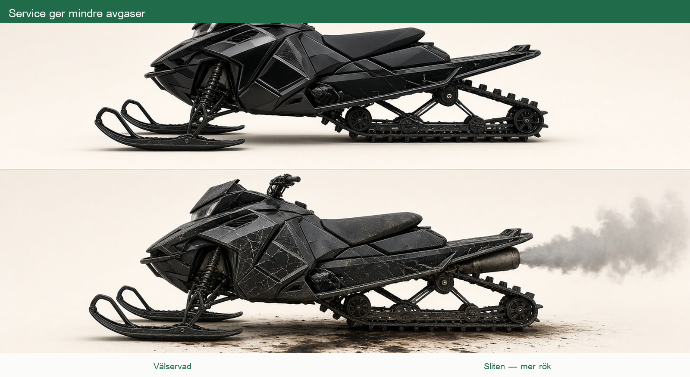
Hänsyn vid körning
Anpassa fart och färdsätt så att människor och djur inte störs i onödan och så att skada på mark och växtlighet undviks. Detta krav gäller även där körningen i övrigt är tillåten.
Det som stör djuren mest är plötsliga ljudtoppar. Du stör djurlivet minst genom att undvika kraftiga accelerationer och hålla jämn fart. Låg fart hjälper, men inte om du rycker i gasen.
I närheten av bostäder, stugor, skidspår och rastplatser bör du:
- sänka farten i god tid
- undvika kraftiga accelerationer
- hålla avstånd till människor och djur
- stänga av motorn vid längre uppehåll
- följa skyltar, ledanvisningar och lokala hastighetsgränser
Djurliv
Vilda djur har begränsade energireserver under vintern. Upprepade störningar eller förföljande kan tvinga dem att förbruka energi och lämna viktiga områden.
Om du ser vilt ska du sänka farten, hålla avstånd och stanna om det behövs. Försök inte driva undan djuret med skotern. Välj en annan färdväg när det kan göras säkert och lagligt.
Renar och renskötsel
Renar är tamdjur och renskötseln är en skyddad näring. En skoter kan splittra en hjord och försvåra samling, flyttning och bete.
När renar finns på eller nära leden:
- stanna på tillräckligt avstånd
- stäng av motorn om väntan blir längre
- följ anvisningar från renskötare, ledvärd eller myndighet
- vänd och ta en tillåten omväg
- kör inte genom en samlad hjord
Tillfälliga avstängningar kan införas vid rensamling eller flyttning. Kontrollera därför aktuell information före turen.
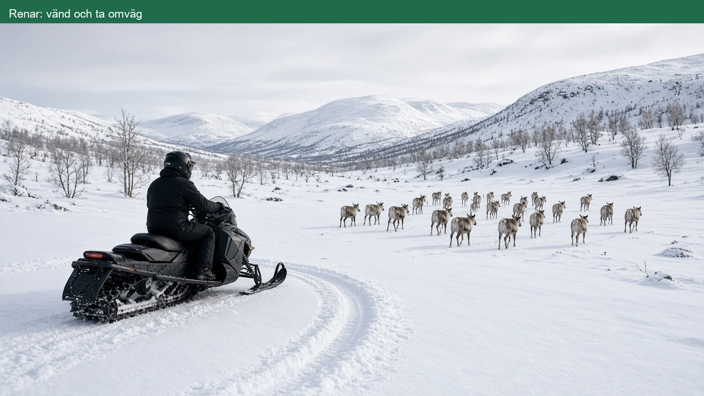
Nationella regler för marken
Barmark
Körning med motordrivet fordon i terräng på barmark är som huvudregel förbjuden för annat ändamål än jordbruk eller skogsbruk. I terrängkörningsförordningen finns särskilda undantag för vissa arbets- och samhällsuppgifter. Vanlig nöjeskörning omfattas inte av dessa undantag.
Marken räknas som barmark om snötäcket är så tunt eller löst att fordonet kommer i kontakt med marken.
Plant- och ungskog
På snötäckt skogsmark med plant- eller ungskog är körning förbjuden om det inte är uppenbart att den kan ske utan risk för skada på skogen. Terrängkörningsförordningen anger att bestämmelsen avser plant- eller ungskog vars medelhöjd över snötäcket är lägre än två meter.
Små plantor kan vara helt dolda av snö. Använd därför upplåtna leder och kör inte in i en föryngring enbart för att plantorna inte syns.
Terrängkörningslagen tillåter alltså körning på snötäckt skogsmark när snötäcket är tillräckligt, körningen inte riskerar att skada mark eller skog och inget förbud gäller. Men lagen svarar bara på frågan om skada. Rätten att använda annans mark är en annan fråga: snöskoterkörning ingår inte i allemansrätten, så du behöver markägarens tillstånd eller en upplåten led.
Jordbruksmark
På snötäckt jordbruksmark är körning förbjuden om det inte är uppenbart att den kan ske utan risk för skada på marken. En frusen yta eller ett tunt snölager är inte i sig ett bevis på att körningen är riskfri. Vall, gröda och dränering kan skadas.
Skyddad natur
Nationalparker och naturreservat har egna föreskrifter. Reglerna varierar mellan områden och kan innebära totalförbud, krav på led eller tidsbegränsningar. Kontrollera beslut och karta hos länsstyrelsen eller den myndighet som förvaltar området.
Regleringsområden och lokala regler
I delar av fjällområdet finns statliga regleringsområden. I vissa är allmän skoterkörning helt förbjuden; i andra får den endast ske på allmän skoterled eller enligt särskilda undantag. Därutöver kan kommunen eller länsstyrelsen besluta om lokala trafikföreskrifter och andra begränsningar inom sina respektive ansvarsområden.
Föraren behöver före turen kontrollera:
- länsstyrelsens karta och föreskrifter för regleringsområden
- föreskrifter för naturreservat och nationalparker
- kommunens lokala trafikföreskrifter
- markägarens eller ledägarens villkor
- tillfälliga avstängningar och aktuell ledstatus
Funäsfjällen och Tänndalen
Funäsfjällen, där Tänndalen ingår, ligger inom ett reglerat skoterområde. Enligt den lokala information som kontrollerades den 18 september 2026 får allmänheten köra på markerade skoterleder och inom anvisade friåkningsområden. Körning utanför dessa områden är inte tillåten för allmänheten.
Lederna är avgiftsbelagda och Fjällpass Skoter krävs per skoter enligt Funäsfjällens Ledbolags villkor. Passet ersätter inte förarbevis, markregler eller andra rättsliga krav.
Kör endast på leder som är öppna. Leder kan stängas på grund av exempelvis snöbrist, höga vattenflöden, jakt, renskötsel eller vårförbud. Kontrollera öppen eller stängd status samma dag i appen Spår & Leder Funäsfjällen eller på Funäsfjällens Ledbolags webbplats. En tryckt karta visar sträckningen men inte alltid aktuella avstängningar.
Kontroll före turen
- Är färdvägen upplåten av markägaren eller ledägaren?
- Finns regleringsområde, områdesskydd eller lokal föreskrift?
- Är leden öppen i dag?
- Är snötäcket tillräckligt för att mark och växtlighet inte ska skadas?
- Passerar färden ungskog, jordbruksmark, bostäder eller renbetesområde?
- Är skotern servad och lasten ordnad så att buller, utsläpp och spill begränsas?
Källor till kapitlet finns i källförteckningen längst bak i boken. Kontrollerade 18 september 2026.
Trafikregler
Trafikförordningen innehåller regler för trafik både på väg och i terräng. Som snöskoterförare behöver du kunna avgöra vilket område du kör i, följa anvisningar och anpassa färden till andra trafikanter.
Efter kapitlet ska du kunna:
- skilja mellan terräng, väg och is
- redogöra för undantagen som medger kort färd på annan väg än enskild väg
- tillämpa reglerna om stopp, passagerare och 20 km/h vid sådan färd
- känna igen vanliga märken och ledmarkeringar
- tillämpa mötes- och väjningsregler i terräng
- hitta lokala trafikföreskrifter och aktuell information
Terräng, väg och is
I förordningen om vägtrafikdefinitioner är terräng ett område som inte är väg.
Begreppet väg omfattar bland annat en väg, gata, ett torg eller en annan led eller plats som allmänt används för trafik med motorfordon. Det omfattar också leder som är ordnade för cykeltrafik samt gång- eller ridbanor intill en väg. Det är platsens funktion och användning, inte enbart beläggningen eller vem som äger marken, som avgör om den är väg.
En skoterled som går genom naturen är normalt terräng, inte väg. En parkeringsyta kan däremot vara väg om den allmänt används för motorfordonstrafik.
Is på vatten räknas inte som terräng. Det innebär inte att körning alltid är tillåten eller säker. Lokala trafikföreskrifter, områdesskydd, ledvillkor och andra bestämmelser kan gälla, och föraren ansvarar alltid för att bedöma isens bärighet.
Snöskoter på väg
En terrängskoter får som huvudregel inte köras på andra vägar än enskilda vägar. Trafikförordningen medger två viktiga undantag:
- Om du behöver korsa en väg som inte är enskild får du köra på vägen den kortaste lämpliga sträckan.
- Du får också färdas på vägen när det är nödvändigt med hänsyn till terrängförhållandena, exempelvis för att passera ett hinder där färd i terrängen inte är möjlig.
Undantagen ger inte rätt att använda vägen som vanlig färdväg när terrängkörning är möjlig.
På väg får en snöskoter aldrig köras fortare än 20 km/h, eftersom den är ett bandfordon. På annan väg än en enskild väg som endast i mindre omfattning används av allmänheten får passagerare inte tas med på skotern eller i ett kopplat fordon.
Vid en korsning av en allmän väg ska passagerare därför kliva av före vägen och gå över. Föraren ska köra över ensam.
En förare som kör ut från terrängen ska stanna innan färden går ut på vägen och lämna företräde åt trafikanterna på vägen. Välj en plats med god sikt och korsa utan onödigt dröjsmål.
På enskild väg kan vägens ägare begränsa motortrafik genom exempelvis vägmärke eller bom. Kontrollera dessutom om lokala trafikföreskrifter gäller.
Korsning med järnväg
Den som ska korsa järnväg eller spårväg ska vara särskilt försiktig och anpassa hastigheten så att fordonet kan stannas före korsningen. Kör inte in om:
- ett tåg eller en spårvagn närmar sig
- röd signal visas, ljudsignal hörs eller en bom fälls, är fälld eller reses
- det finns risk att du måste stanna i korsningen
Stanna på betryggande avstånd när korsningen inte får passeras. Passera sedan utan onödigt dröjsmål. Att låta passagerare kliva av före korsningen är en lämplig säkerhetsrutin och kan krävas av kursarrangör eller ledägare, men de särskilda reglerna för järnväg ska alltid följas.
Grundregler i trafiken
Alla trafikanter ska visa omsorg och varsamhet. En terrängtrafikant ska dessutom anpassa färdväg, hastighet och färdsätt så att människor och djur inte störs i onödan och så att skada på annans mark eller växtlighet undviks.
En skyltad högsta hastighet är ett tak. Farten ska alltid vara så låg att du behåller kontrollen och kan stanna inom den sträcka du kan överblicka. Sikt, underlag, kurvor, krön, människor, djur och mötande trafik kan kräva betydligt lägre fart.
Vägmärken och anvisningar
Vägmärken gäller även snöskoterförare när märket är tillämpligt. Anvisningar genom vägmärke, signal eller tecken av behörig person gäller före generella trafikregler.
Vanliga huvudgrupper är:
- varningsmärken, oftast triangelformade med röd ram
- väjningspliktsmärken, exempelvis väjningsplikt och stopplikt
- förbudsmärken, oftast runda med röd ram
- påbudsmärken, runda och blå
- anvisningsmärken, oftast fyrkantiga
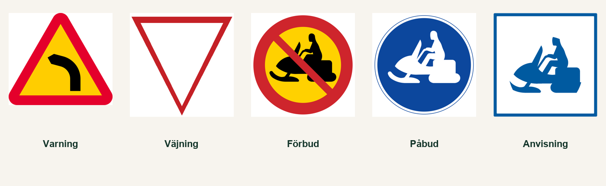
Märken att känna igen
Lämplig färdväg för snöskoter
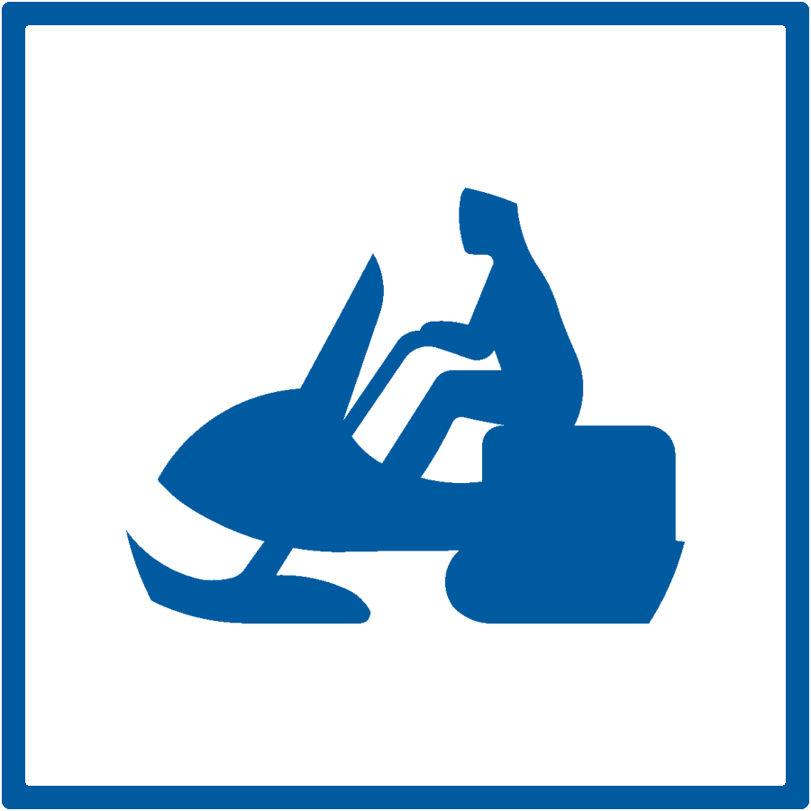
Lokaliseringsmärket F31 med snöskotersymbol visar en väg eller förbifart som är lämplig för snöskoter. Märket är inte i sig ett påbud att följa leden. Körning utanför leden kan däremot vara förbjuden av terrängkörningslagen, områdesföreskrifter, markägarens villkor eller andra regler.
Påbjuden led för terrängmotorfordon
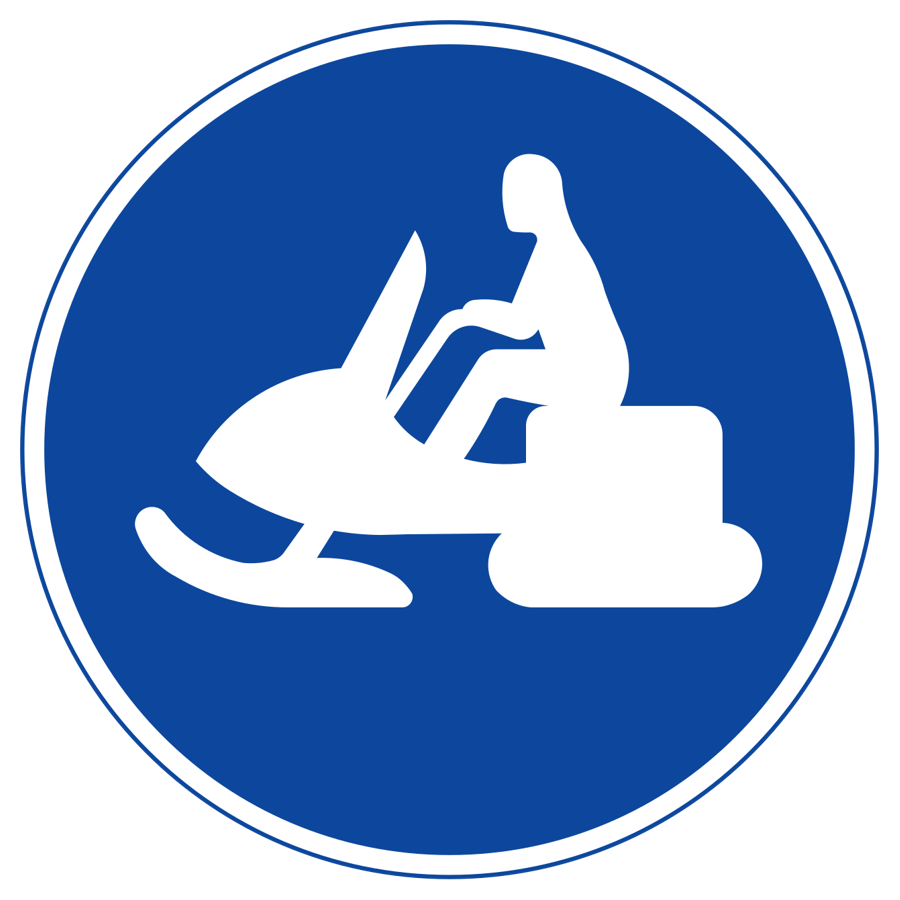
Det runda blå märket D9 anger att terrängmotorfordon ska föras på leden. Om märket avser ett visst slags terrängmotorfordon anges det på en tilläggstavla.
Du är skyldig att följa den påbjudna leden; körning med terrängmotorfordon utanför leden är förbjuden. Märket medger gångtrafik. Annan trafik är förbjuden om inget annat anges.
Lokal information om is och vatten
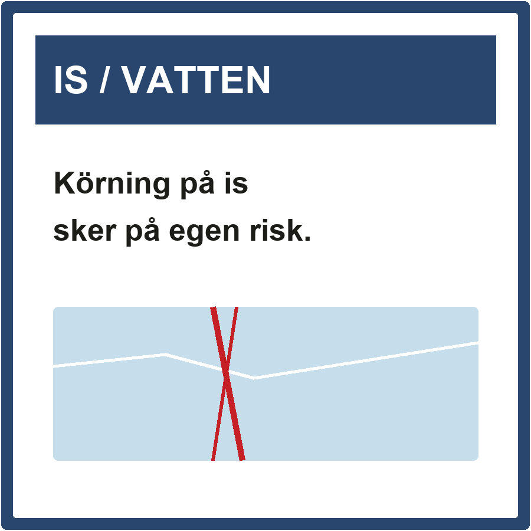
Skyltar med texten "körning på is sker på egen risk" kan förekomma lokalt, men de är inte nationella vägmärken och betyder inte att leden är en skoterled. Skylten är ingen garanti för bärigheten. Kontrollera lokal isinformation och gör en egen säkerhetsbedömning. Förhållandena kan ändras snabbt vid strömmande vatten, sund, broar och in- eller utlopp.
Förbud mot gångtrafik
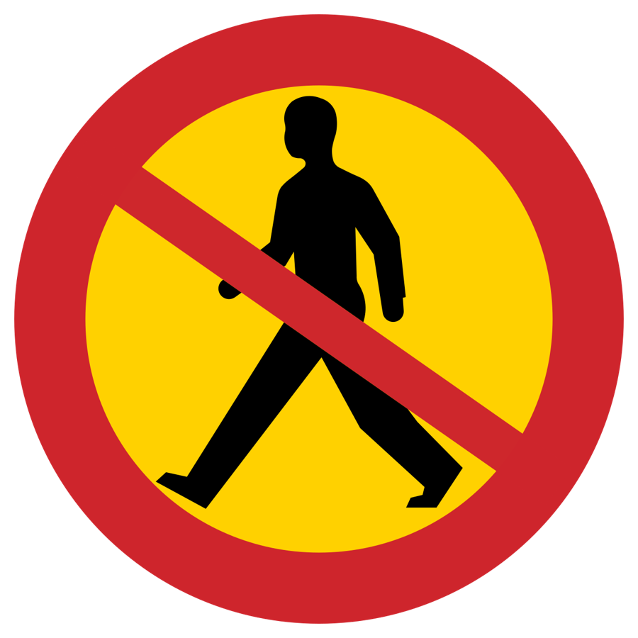
Förbudsmärket C15 gäller gångtrafik. Trafikförordningens bestämmelser om gående gäller även den som åker skidor, så förbudet omfattar också skidåkare. Det är inte ett förbudsmärke för snöskoter. Läs alltid eventuella tilläggstavlor och andra märken på samma plats.
Olämplig färdväg
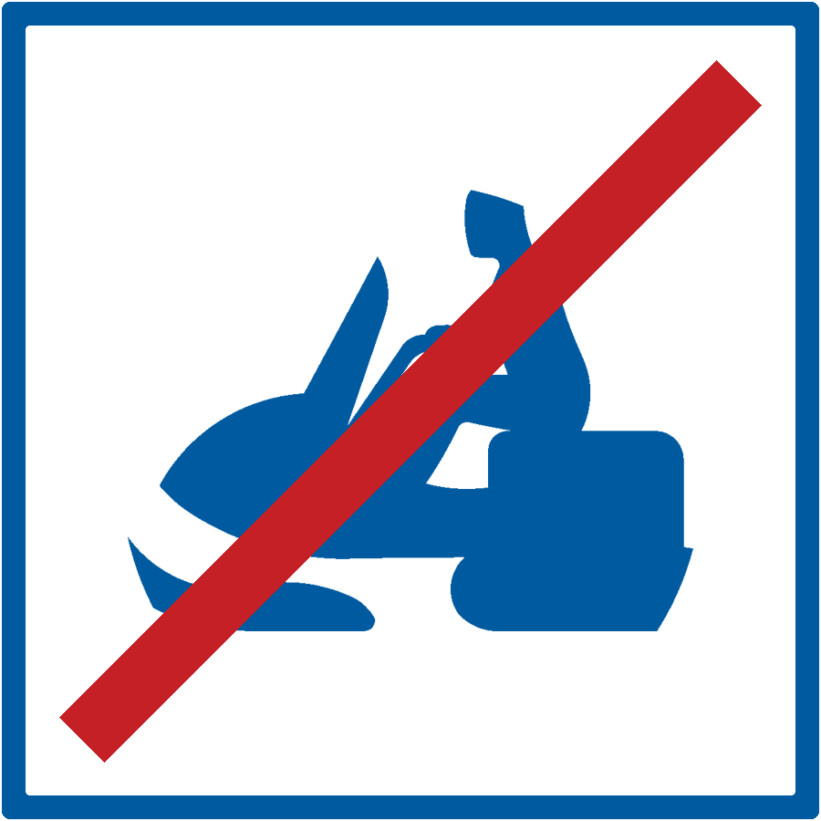
Märket upplyser om att färdvägen inte är lämplig för snöskoter. Om körningen är förbjuden framgår det av förbudsmärke eller annan gällande föreskrift.
Förbud mot terrängmotorfordon
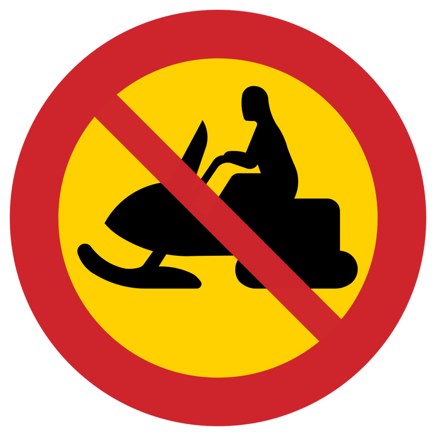
Förbudsmärket C13 anger förbud mot trafik med terrängmotorfordon och terrängsläp. Om förbudet inte gäller terrängvagn anges det på en tilläggstavla.
Ledmarkering och röda kryss
Röda kryss markerar en vinterled. De visar ledens sträckning men innebär inte ensamma att leden är upplåten för snöskoter. Vinterleden kan användas av exempelvis skidåkare, gående och hundspann.
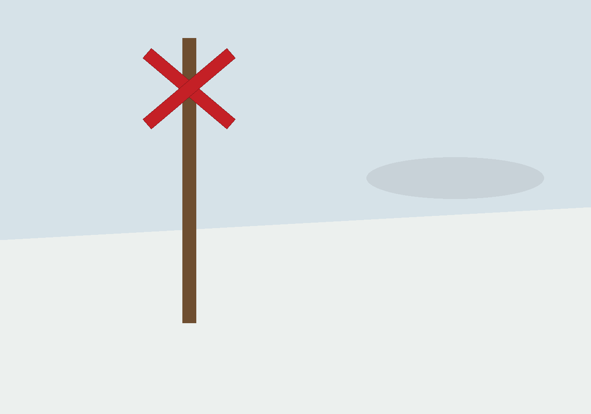
För att avgöra om skoterkörning är tillåten ska du kontrollera skotermärke, tilläggstavlor, områdets föreskrifter, ledkarta och aktuell ledstatus. Ett ledkryss kan vara kompletterat med ett påbuds- eller anvisningsmärke för skoter.
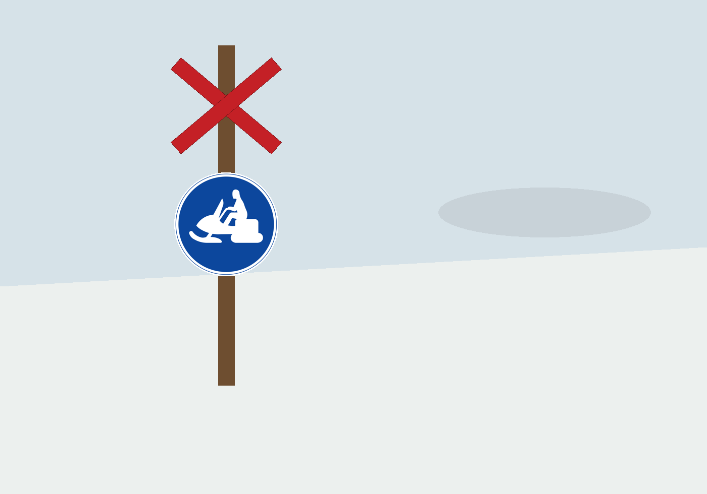
Hastighet
I terräng är högsta tillåtna hastighet 70 km/h utanför tättbebyggt område och 50 km/h inom tättbebyggt område, om inte en annan lägre gräns gäller. På väg får en snöskoter som bandfordon köras i högst 20 km/h.
Lokala hastighetsgränser kan gälla på leder och inom särskilda områden. Anpassningsregeln gäller oavsett skyltad gräns.
Möte och väjning i terräng
Det är missvisande att sammanfatta all ledkörning med uttrycket ”högertrafik”. Följ i stället de regler som gäller för situationen:
- Vid möte mellan fordon ska fordonen hållas till höger och förarna lämna betryggande avstånd i sidled.
- När två fordons kurser skär varandra har föraren väjningsplikt mot fordonet som närmar sig från höger, om inte skyltning eller en särskild regel anger annat.
- Den som har väjningsplikt ska i god tid sänka farten eller stanna och får fortsätta endast om det kan ske utan fara eller hinder.
- I terräng har en förare väjningsplikt mot gående.
Trafikförordningens bestämmelser om gående gäller också den som åker skidor, skridskor eller liknande samt den som för, leder, skjuter eller drar en sparkstötting eller liknande fordon. En snöskoterförare ska därför lämna gående och skidåkare företräde i terräng.
Hundspann och andra fordon omfattas inte automatiskt av regeln om gående. Vid möte eller korsande färdvägar gäller tillämpliga fordonsregler, skyltning och det allmänna kravet på omsorg och varsamhet. Sänk farten tidigt och ge ekipaget tillräckligt utrymme.
Håll avstånd till framförvarande och parkera inte där sikten är skymd eller där leden blockeras.
Lokala regler
Kommunens lokala trafikföreskrifter kan ändra hastighetsgränser och införa förbudsområden för snöskoter. Ska du köra in i en annan kommun är det alltså den kommunens lokala trafikföreskrifter du ska slå upp. De finns samlade i Svensk trafikföreskriftssamling (STFS) och ofta på kommunens webbplats. För regleringsområden och skyddad natur ska du även kontrollera länsstyrelsens beslut och kartor.
En skoterklubbs karta eller app är ett viktigt praktiskt hjälpmedel, men ersätter inte vägmärken och gällande föreskrifter. Kontrollera också om en led är tillfälligt stängd.
Körning i Norge och Finland
Regler om behörighet, registrering, försäkring, leder och markägarens tillstånd skiljer sig mellan länderna och ändras då och då. Lär dig reglerna för det land du ska köra i innan du åker, inte på plats.
Kontrollera aktuella regler hos de norska respektive finländska myndigheterna och fråga ditt försäkringsbolag vilka handlingar du behöver ha med och vilket skydd som gäller. Gör kontrollen nära avresan.
Vapen på snöskoter
Enligt 22 § jaktförordningen (1987:905) får skjutvapen inte medföras vid färd med motordrivet fordon i terräng. Bestämmelsen innehåller särskilt angivna undantag, bland annat för viss tjänsteutövning och vissa tillstånd eller jaktsituationer.
Om ett skjutvapen förvaras i ett motordrivet fortskaffningsmedel får ammunition inte finnas i vapnets patronläge eller magasin. Den som behöver transportera vapen ska läsa hela bestämmelsen och eventuellt beslut om undantag; en viss typ av väska eller placering skapar inte i sig ett undantag.
Sammanfattning
- Terräng är ett område som inte är väg; is på vatten räknas inte som terräng.
- På annan väg än enskild väg får snöskoter bara köras i de angivna undantagsfallen.
- Vid sådan vägkörning gäller normalt högst 20 km/h och förbud mot passagerare.
- Stanna innan du kör ut från terräng på väg och lämna vägtrafiken företräde.
- Vid fordonsmöte: håll till höger och lämna säkert sidavstånd.
- Vid korsande fordonskurser gäller högerregeln om inget annat anges.
- Gående och skidåkare ska lämnas företräde i terräng.
- Röda kryss visar vinterled men är inte ensamma ett besked om att skoterkörning är tillåten.
Källor till kapitlet finns i källförteckningen längst bak i boken. Kontrollerade 18 september 2026.
Straff, behörighet och försäkring
Snöskotern är ett motordrivet fordon. Föraren behöver rätt behörighet och ägaren måste se till att reglerna om registrering och trafikförsäkring följs. Överträdelser kan få betydelse både straffrättsligt och för körkort eller körkortstillstånd.
Efter kapitlet ska du kunna:
- ange vem som får köra snöskoter
- beskriva när trafikförsäkring krävs och vad den täcker
- skilja mellan olaglig narkotikaanvändning och läkemedel som används enligt ordination
- ge exempel på följder av trafikbrott och andra regelöverträdelser
Vem får köra?
För att köra snöskoter i Sverige ska du i regel:
- ha fyllt 16 år
- ha förarbevis för snöskoter
Den som tog ett svenskt körkort eller traktorkort före den 1 januari 2000 får köra snöskoter utan särskilt förarbevis. Ett körkort eller traktorkort som togs senare ger inte den rätten vid vanlig, självständig körning.
Skotersafari
Den som har körkort eller traktorkort får köra inom organiserad turistverksamhet, så kallad skotersafari, om samtliga följande villkor är uppfyllda:
- gruppen består av högst tio förare
- färden leds av en person som har förarbevis för snöskoter
- färden går längs en sträcka som ledaren har bestämt i förväg
Ett AM-körkort kan alltså ge rätt att köra under dessa särskilda förutsättningar, men ersätter inte förarbevis vid annan skoterkörning.
Utbildning, prov och kort
De praktiska delarna i utbildningen får påbörjas från 15 år och 9 månader hos en godkänd utbildare. Privat övningskörning är inte tillåten. Kunskapsprovet får göras tidigast vid 16 års ålder.
Efter ett godkänt kunskapsprov får du köra när resultatet har registrerats hos Transportstyrelsen, om du har giltig legitimation med dig. Efter två månader måste du ha med själva förarbeviset när du kör.
Förarbeviset ska färdigställas enligt Transportstyrelsens anvisningar, bland annat med foto, namnteckning och betalning. Om underlaget inte har kommit in inom ett år från det godkända provet upphör rätten att köra med stöd av provet.
Att köra utan den behörighet som krävs kan bedömas som olovlig körning. Det kan också påverka möjligheten att få eller behålla andra körkortsbehörigheter.
Trafikförsäkring
En snöskoter som är registrerad i vägtrafikregistret och påställd ska ha trafikförsäkring, även om den för tillfället inte används. Försäkringen ska gälla från den dag försäkringsplikten börjar, till exempel när en ny ägare registreras eller när ett avställt fordon ställs på.
Det är normalt ägaren som ska teckna försäkringen. Vid kreditköp med återtagandeförbehåll, eller när någon hyr eller leasar skotern i minst ett år, är det i stället innehavaren. Saknar en påställd skoter försäkring tar Trafikförsäkringsföreningen, TFF, ut en trafikförsäkringsavgift för varje oförsäkrad dag. Avgiften är ingen försäkring, den är normalt dyrare än en vanlig premie och den tas ut även om skotern står stilla.
En snöskoter som är avställd i vägtrafikregistret behöver inte vara trafikförsäkrad så länge den inte används. Ett avställt fordon får inte köras. Ska skotern användas måste den först ställas på och ha trafikförsäkring från påställningsdagen.
Vad försäkringen täcker
Trafikförsäkringen kan ersätta:
- personskador på förare, passagerare och andra personer
- skador som skotern orsakar på någon annans fordon eller annan egendom
Den ersätter normalt inte skador på den egna snöskotern. Skydd för exempelvis stöld, brand eller vagnskada kräver ett mer omfattande försäkringsskydd och beror på försäkringsvillkoren.
Om ett oförsäkrat fordon orsakar en skada kan TFF ersätta den skadelidande. Ägare eller förare kan därefter, beroende på omständigheterna, bli skyldig att betala belopp till TFF. Följderna är alltså inte begränsade till trafikförsäkringsavgiften.
Alkohol, narkotika och läkemedel
Gränsen för rattfylleri är 0,2 promille alkohol i blodet, eller motsvarande alkoholkoncentration i utandningsluften. Rattfylleri och grovt rattfylleri kan leda till böter eller fängelse samt till körkortsingripande. Den säkra regeln är att inte köra efter att ha druckit alkohol.
För narkotika gäller i huvudsak en nollgräns i trafiken: den som kör ett motordrivet fordon med ett narkotiskt ämne kvar i blodet efter olagligt intag kan dömas för rattfylleri. Olagligt bruk eller innehav kan också vara narkotikabrott.
Narkotikaklassade läkemedel som har ordinerats av läkare eller annan behörig receptutfärdare omfattas av ett ordinationsundantag när de används enligt ordination. Det betyder inte att körning alltid är tillåten. En förare kan dömas för rattfylleri om ett ordinerat läkemedel — eller ett läkemedel som inte är narkotikaklassat — har gjort personen så påverkad att körningen är trafikfarlig. Använd endast egna läkemedel enligt ordination och kör inte om reaktion, uppmärksamhet, omdöme eller samordning är nedsatt.
Andra överträdelser och följder
- Olovlig körning: körning utan föreskriven behörighet.
- Hastighetsöverträdelse: körning över gällande hastighetsgräns, även på skoterled där en gräns är utmärkt eller annars gäller.
- Otillåten terrängkörning: körning i områden eller under förhållanden där terrängkörningsregler eller lokala föreskrifter förbjuder färd.
- Rattfylleri: körning efter alkoholintag över straffbar gräns eller under straffbar påverkan av narkotika eller annat medel.
Följden beror på vilken regel som överträtts och på omständigheterna. Böter, fängelse, återkallelse av körkort eller förarbevis och spärrtid för framtida körkort kan bli aktuella. Exakta påföljder avgörs i det enskilda fallet.
Vid en kontroll
Polisen kan kontrollera förarens identitet och behörighet samt fordonets registrerings-, påställnings- och försäkringsuppgifter. Under de första två månaderna efter att ett godkänt prov har registrerats ska föraren kunna legitimera sig. Därefter ska förarbeviset medföras vid körning.
Källor till kapitlet finns i källförteckningen längst bak i boken. Kontrollerade 18 september 2026.
Trafiksäkerhet
Säker snöskoterkörning bygger på anpassad hastighet, goda säkerhetsmarginaler och vägval som tar hänsyn till sikt, underlag, last, väder och förarens förmåga. Förhållandena kan förändras snabbt, även på en välkänd led.
Efter kapitlet ska du kunna:
- förklara hur hastigheten påverkar reaktions-, broms- och stoppsträcka
- beskriva hur passagerare, last och släde påverkar körningen
- redogöra för en säker vägkorsning
- göra en grundläggande go/no-go-bedömning inför färd på is och i lavinterräng
- tillämpa grundprinciper för körning i skrå och backar
Förutseende körning
Förutseende körning innebär att upptäcka risker tidigt och anpassa körningen innan en kritisk situation uppstår. Sänk hastigheten före kurvor, backkrön, möten och platser där människor eller djur kan finnas. Håll ett avstånd som ger utrymme för både reaktion och inbromsning.
Gör en kort riskbedömning före turen:
- Vilket väder, underlag och ljus väntas?
- Finns vägpassager, vattendrag, lavinterräng eller områden med begränsad sikt?
- Passar färdväg och tempo gruppens minst erfarna förare?
- Finns bränsle, reservutrustning, kommunikation och en plan om turen måste avbrytas?
Hastighet, reaktion och stopp
Stoppsträcka är summan av reaktionssträcka och bromssträcka.
- Reaktionssträckan är sträckan från det att föraren upptäcker faran tills inbromsningen börjar.
- Bromssträckan är sträckan från det att bromsningen börjar tills fordonet står stilla.
Reaktionssträckan ökar ungefär proportionellt med hastigheten. Vid dubbla hastigheten blir reaktionssträckan ungefär dubbelt så lång, om reaktionstiden är densamma.
Bromssträckan ökar i en idealiserad beräkning med hastigheten i kvadrat. Dubbel hastighet ger därför ungefär fyra gånger så lång bromssträcka, om övriga förhållanden är oförändrade.
Räkneexempel
Om bromssträckan är 15 meter vid 30 km/h blir den cirka 60 meter vid 60 km/h med samma grepp:
15 × 2² = 60 meter
Siffrorna är ett räkneexempel. På snö och is varierar den verkliga bromssträckan kraftigt med underlag, lutning, styrstål, drivmatta, bromsteknik, maskinens skick, last, passagerare och släde.
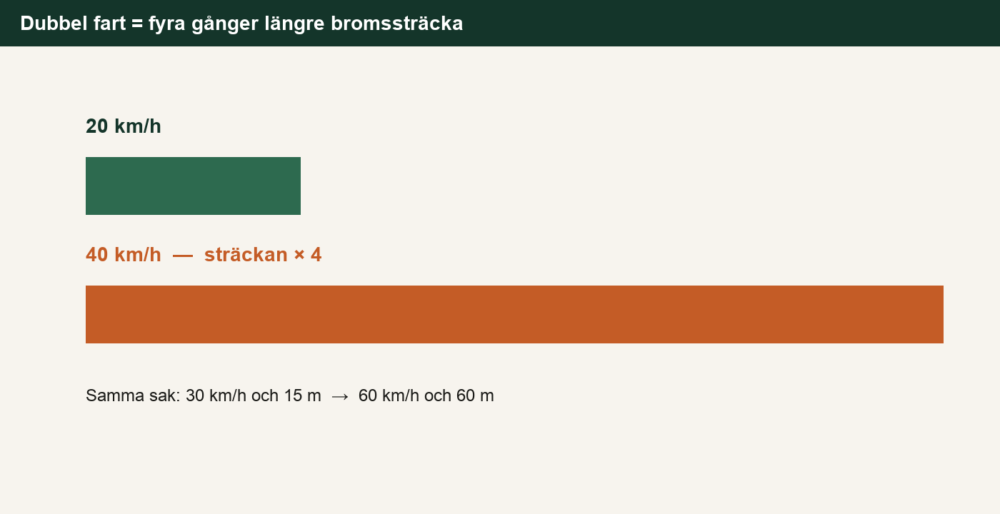
Älg 20 meter framför skotern
Vid 60 km/h rör sig skotern cirka 17 meter per sekund. Med en reaktionstid på en sekund har du hunnit nästan 17 meter innan du ens börjar bromsa. Kommer en älg ut 20 meter framför dig hinner du inte stanna; du har i bästa fall ett par meter kvar att bromsa på.
Lägg ihop reaktionssträckan med bromssträckan från räkneexemplet ovan:
17 m + 60 m ≈ 77 meter
I körkortsutbildningen räknar man ofta med friktionstalet 0,3 på snö. Då blir bromssträckan vid 60 km/h 60² / (250 × 0,3) = 48 meter och stoppsträckan cirka 65 meter. På blank is (friktionstal 0,1) blir enbart bromssträckan över 140 meter. Hur du än räknar behöver du alltså tre till fyra gånger så långt som de 20 meterna för att stanna, och fri sikt minst så långt fram som din stoppsträcka.
Sikt, mörker och underlag
I mörker och nederbörd minskar möjligheten att upptäcka hinder i tid. Anpassa hastigheten så att du kan stanna inom den sträcka du säkert kan överblicka. Öka avståndet till framförvarande.
Efter en stund i hög hastighet kan hastigheten upplevas som lägre än den är, så kallad fartblindhet. Kontrollera hastighetsmätaren och bedöm fortlöpande om farten är lämplig.
Vanliga risker är:
- isiga partier på preparerad eller hårdpackad led
- lös snö som påverkar bärighet, styrning och kylning
- dolda diken, bäckar, stenar och branter
- mötande trafik efter kurvor och backkrön
- spårbildning som kan påverka skoterns riktning
Passagerare, barn och last
Passagerare och last förändrar skoterns viktfördelning: bromssträckan blir längre och skotern blir tyngre och svårare att svänga i kurvor. Följ alltid skoterns instruktionsbok om tillåten last och passagerare. Informera passageraren om hur hen ska sitta och hålla sig samt hur ni kommunicerar under färden. Anpassa hastigheten och undvik tvära manövrer.
Ett litet barn åker säkrast i en skoterpulka tillsammans med en vuxen, i en pulka som är gjord för persontransport. Barnet ska ha hjälm eller annat lämpligt huvudskydd och sitta skyddat från fartvind och kyla.
Ett barn ska inte placeras framför föraren eller styret. Vid en kollision eller kraftig inbromsning kan barnet klämmas mellan föraren och styret, och barnet kan också påverka reglagen.
Vid färd med skoterpulka ska pulkan och kopplingen vara avsedda för ändamålet, lasten säkras och hastigheten anpassas. Se till att avgaser inte kan ledas in eller samlas i pulkan. Alla passagerare ska använda lämpligt huvudskydd enligt gällande regler.
Vid färd på is får ett kapell eller annan utrustning inte hindra snabb utrymning om pulkan går igenom. Följ gällande regler vid vägpassage; passagerare får inte sitta kvar på skotern eller i släpfordonet när vägen korsas.
Skrå, backar och släde
Skotermodeller och underlag reagerar olika. Körteknik ska läras praktiskt under ledning av utbildare och anpassas till maskinens instruktionsbok. Råden nedan är generella principer, inte en ersättning för praktisk utbildning.
Körning på skrå
Vid körning på skrå behöver föraren normalt flytta kroppsvikten upp mot sluttningen för att motverka vältning. Välj en linje med utrymme, låg följdrisk och möjlighet att avbryta. Undvik brantare skrå än förare, maskin och förhållanden medger. Kroppsplacering, stående eller sittande körning och styrteknik kan variera med maskintyp och ska följa instruktörens och tillverkarens anvisningar.
Halt nedför
På halt underlag kan ett låst drivband göra att skotern sladdar och styrförmågan minskar. Ett svagt gaspådrag kan i vissa situationer hålla drivbandet i rörelse och bidra till styrförmågan. Det ska användas kontrollerat; kraftigt gaspådrag ökar hastigheten och risken.
Planera farten före backen, använd mjuka reglage och följ maskinens instruktionsbok och utbildarens teknik. Föraren behöver ofta anpassa vikten bakåt i nedförslut, men exakt kroppsställning beror på maskin, lutning och underlag.
Släde i nedförsbacke
En släde ökar ekipagets massa och längd. Hård inbromsning i en brant nedförsbacke kan medföra att släden skjuter på och ekipaget viker sig, så kallad fällknivseffekt. Sänk hastigheten före backen, bromsa mjukt och tidigt och följ tillverkarens gränser för släpvikt och koppling.
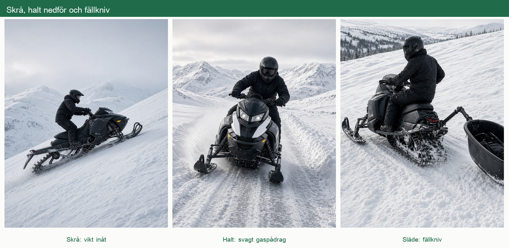
Korsa en väg
En snöskoter får inte användas för vanlig färd på väg, men en väg får korsas där reglerna medger det. Genomför korsningen så här:
- Välj om möjligt en plats med god sikt åt båda håll och utan hinder på andra sidan.
- Låt samtliga passagerare stiga av skotern och släpfordonet.
- Stanna helt före vägbanan.
- Kontrollera att vägen är fri och att hela ekipaget kan komma över utan att stanna.
- Korsa vägen rakt, kort och under full kontroll. Anpassa gasen för jämn framdrivning; försök inte lösa dåligt fäste genom hög ansatsfart.
- Låt passagerarna stiga på först när hela ekipaget har lämnat vägen och står säkert.
Synlig asfalt är den största risken vid en vägkorsning: mattan får dåligt fäste, skidorna styr sämre och skotern kan fastna och bli stående mitt på vägen. Asfalten sliter dessutom på skidor, styrstål och drivmatta. Går det inte att korsa kontrollerat, välj en annan plats.
Is och vattendrag
Naturis är föränderlig och kan ha stora lokala variationer. Skoterspår, markerad led eller tidigare trafik visar inte att isen bär. Isdubbar, räddningslina och flythjälp förbättrar möjligheten att överleva och hjälpa andra, men ingen utrustning bevisar att isen är säker.
Go/no-go före färd
Avstå från färden om du inte kan få ett tillräckligt tillförlitligt underlag för beslutet. Kontrollera:
- aktuell officiell och lokal information om isläge, avstängningar och varningar
- väderutveckling, temperatur, nederbörd och vattenstånd
- om sjön är reglerad eller om färdvägen passerar sund, inlopp, utlopp, råkar, broar, bryggor, vass eller andra kända svagheter
- om den planerade vägen kan följas utan att gå nära öppet vatten eller okända partier
- om gruppen har rätt utrustning, kunskap, kommunikation och reservplan
Okänd is ska behandlas som osäker. En allmän uppgift om istjocklek gäller inte automatiskt längs hela färdvägen. Lokal information kan vara inaktuell; förhållandena ska bedömas för den aktuella platsen och tiden. Vid tveksamhet: välj landväg eller avstå.
Grupp och utrustning
- Kör inte ensam.
- Håll ett genomtänkt avstånd mellan skotrarna så att inte flera belastar samma svaga område eller kör ner i samma vak. Avståndet ska samtidigt medge uppsikt och hjälp.
- Bär isdubbarna högt runt halsen, nära hakan och lätt åtkomliga, inte i fickan eller packningen. Följ produktens anvisningar.
- Medför kast- eller räddningslina så att hjälp kan ges på avstånd.
- Använd lämplig flythjälp, exempelvis flytoverall eller flytväst enligt produktens användningsområde.
- Förvara telefon eller kommunikationsutrustning vattenskyddat och ha möjlighet att ange position.
- Planera i förväg vem som larmar, vem som använder linan och hur gruppen undviker att fler går igenom.
Om du går igenom isen
- Försök behålla lugnet och kontrollera andningen.
- Vänd dig mot det håll du kom från; där bar isen nyss.
- Använd isdubbarna, arbeta dig upp horisontellt och sparka med benen.
- Fördela vikten genom att åla eller rulla bort från vaken innan du reser dig.
- Ta dig till värme och torra kläder. Ring 112 vid akut fara, nedkylning, skada eller om någon saknas.
Den som hjälper ska hålla avstånd från vakens kant, fördela sin vikt och använda lina eller annat förlängande hjälpmedel. Gå inte fram så att även räddaren hamnar i vattnet.
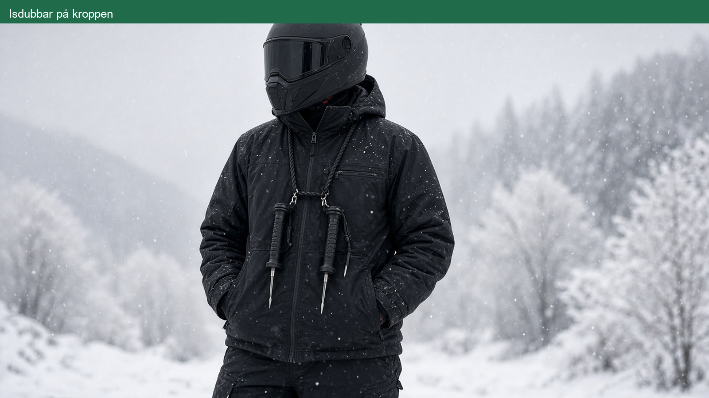
Laviner och fjäll
Lavinfara finns i och nedanför brant, snötäckt terräng. Kontrollera aktuell prognos på Lavinprognoser.se och väderinformation före färden, och följ prognosens råd för det aktuella området.
Ett grundläggande sätt att minska risken är att undvika sluttningar som är brantare än 30 grader. Bedöm också terrängen ovanför och intill färdvägen. Du kan träffas av en lavin utan att själv befinna dig på den branta sluttningen:
- utloppsområden är platser nedanför där lavinen kan fortsätta
- terrängfällor, exempelvis raviner, sänkor, bäckfåror, träd och stenar, kan öka begravningsdjupet eller skadornas allvar
- hängdrivor och branta sluttningar ovanför leden kan innebära risk
En markerad skoterled är inte en garanti mot laviner. Om rutten går i, under eller nära lavinterräng krävs aktuell bedömning och ett säkert vägval.
I lavinterräng:
- exponera endast en person i taget i ett riskområde
- stanna och samla gruppen på säkra platser, inte i utloppsområden
- håll uppsikt över den som passerar
- låt varje person bära en sändande lavinsändare på kroppen samt egen sond och spade
- genomför funktionskontroll före turen och träna regelbundet på kamraträddning
Lavinutrustning minskar inte sannolikheten att utlösa en lavin och ersätter inte terrängval, prognos eller utbildning. Den som saknar kunskap för att bedöma terrängen ska välja en färdväg utanför lavinterräng eller anlita kvalificerad ledare.
Om en lavin går
Säkra först din egen position och markera den punkt där den drabbade senast sågs. Inled kamraträddning omedelbart. Oskadade deltagare ställer sina lavinsändare i sökläge, söker, sonderar och gräver fram huvud och luftväg först. Ring 112 utan att fördröja det omedelbara sökandet. Följ den metod ni har tränat på; avsnittet ersätter inte praktisk kamraträddningsutbildning.
Planera turen
- Lämna färdplan och beräknad återkomsttid till en kontaktperson.
- Anpassa gruppstorlek, väg och tempo till förhållandena.
- Medför karta och kompass och kunna använda dem även om telefon eller GPS slutar fungera.
- Ta med utrustning för kyla, första hjälpen, enklare reparation och bärgning.
- Avbryt eller vänd i tid när väder, sikt, underlag, bränsle eller gruppens förmåga försämras.
Källor till kapitlet finns i källförteckningen längst bak i boken. Kontrollerade 18 september 2026.
Människan som förare
Förarens uppmärksamhet, omdöme och beslutsförmåga är avgörande för säkerheten. Trötthet, stress, alkohol, andra droger, läkemedel och sjukdom kan försämra körförmågan, ibland innan föraren själv uppfattar förändringen.
Efter kapitlet ska du kunna:
- förklara hur erfarenhet och riskmedvetenhet påverkar körningen
- beskriva hur stress, trötthet och sjukdom kan försämra körförmågan
- redogöra för riskerna med alkohol, andra droger och läkemedel
- känna igen kolmonoxidförgiftning och agera säkert
- hantera grupptryck och avstå från körning när förutsättningarna inte är säkra
Erfarenhet och självinsikt
Erfarenhet kan hjälpa en förare att känna igen riskmönster och anpassa hastighet eller vägval tidigare. Reaktionssnabbhet kan inte kompensera för att en fara upptäcks för sent.
Bristande erfarenhet kan leda till felbedömning av fart, lutning, avstånd, underlag eller den egna förmågan. Även en erfaren förare kan överskatta sin förmåga, särskilt på en välkänd sträcka eller efter flera turer utan incidenter.
Säker körning kräver fortlöpande självbedömning:
- Är min kunskap tillräcklig för terrängen och maskinen?
- Har jag marginal för ett oväntat möte eller hinder?
- Påverkas mitt beslut av tidspress eller av gruppen?
- Bör jag sänka hastigheten, välja en annan väg eller avstå?
Syn, uppmärksamhet och stress
Synen ger en stor del av den information som behövs för körningen. Blicken ska föras långt fram och användas för att söka efter hinder, mötande trafik och förändringar i underlaget.
Vid hög fart eller stress kan uppmärksamheten smalna av. Föraren kan missa information vid sidan av färdvägen och fatta sämre beslut. Fartblindhet innebär att en hög hastighet efter en stund kan upplevas som lägre än den är.
Tidspress, dålig sikt, kyla, telefoner och oro för att tappa gruppen tar uppmärksamhet från körningen. Minska belastningen genom att stanna på en säker plats, lösa problemet och fortsätta först när du kan koncentrera dig på färden.
Trötthet
Trötthet kan försämra uppmärksamhet, reaktionstid, omdöme, samordning och förmåga att fatta beslut. Tidiga tecken kan vara:
- upprepade gäspningar eller tunga ögonlock
- svårighet att hålla jämn fart och färdlinje
- missade skyltar, avtagsvägar eller delar av färden
- irritation, rastlöshet eller ovanligt långsamma beslut
Kyla, fysisk ansträngning, mörker, monotoni och lång körtid kan öka tröttheten. Kaffe, frisk luft eller en kort paus kan ge en tillfällig känsla av pigghet men ersätter inte sömn. Om du inte är tillräckligt alert ska du stanna säkert och avstå från fortsatt körning tills du är återhämtad.
Alkohol
Alkohol kan försämra omdöme, reaktionsförmåga, uppmärksamhet, syn och samordning samt öka risktagandet. Gränsen för rattfylleri är 0,2 promille alkohol i blodet, eller motsvarande koncentration i utandningsluften, men körförmågan kan påverkas redan före den straffbara gränsen.
Alkohol är den enskilt största riskfaktorn i dödsolyckor med snöskoter. Under lång tid var omkring 70 procent av de omkomna alkoholpåverkade; i senare undersökningar är det drygt hälften, och då ofta med mycket höga halter, i genomsnitt runt 1,9 promille. De flesta av dessa olyckor sker på helger, i mörker och på kortare turer i terräng föraren känner till.
Utgångspunkten för säker körning är noll alkohol. Det finns ingen beräkning av antal glas eller timmar som säkert visar att en viss person kan köra. Nedbrytningen varierar och påverkas inte på ett tillförlitligt sätt av kaffe, dusch, sömn eller fysisk aktivitet.
Efter alkoholintag kvällen före kan alkohol finnas kvar nästa morgon eller förmiddag. Även när alkoholhalten har sjunkit kan baksmälla med trötthet, huvudvärk och nedsatt koncentration försämra körningen. Vid osäkerhet ska du inte köra.
Andra droger och läkemedel
Olagliga droger kan kraftigt försämra uppmärksamhet, omdöme, reaktion och motorik. För narkotika gäller i huvudsak nollgräns i trafiken efter olagligt intag.
Läkemedel kan också påverka körförmågan. Vissa smärtstillande, lugnande och sömngivande läkemedel är narkotikaklassade. Ett narkotikaklassat läkemedel som har ordinerats av läkare eller annan behörig receptutfärdare omfattas av ett ordinationsundantag när det används enligt ordination. Undantaget innebär inte att du får köra om läkemedlet har gjort dig trafikfarligt påverkad.
Innan du kör:
- använd endast läkemedel som är avsedda för dig och följ ordinationen
- läs bipacksedeln, särskilt information om bilkörning och användning av maskiner
- fråga läkare eller apotekspersonal om du är osäker
- var särskilt försiktig när behandlingen börjar, dosen ändras eller flera läkemedel kombineras
- kör inte om du känner dig trött, yr, långsam, förvirrad eller på annat sätt påverkad
Det är förarens ansvar att bedöma om körningen kan ske säkert. Ändra inte doseringen på egen hand för att kunna köra.
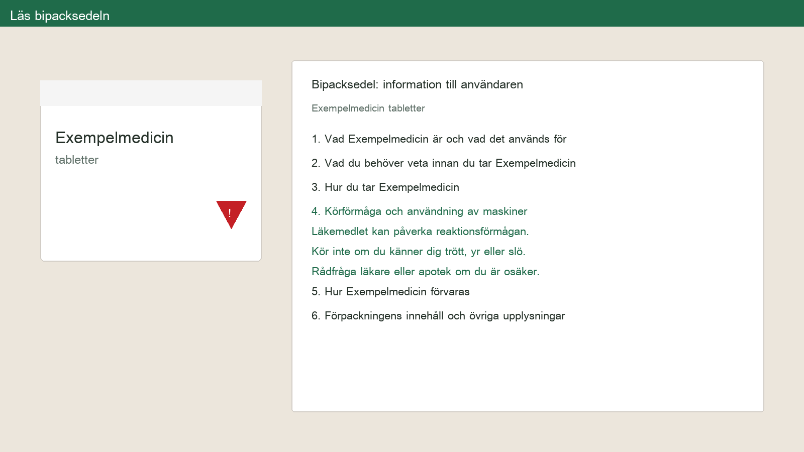
Sjukdom
Sjukdom är ett särskilt kunskapsområde i Transportstyrelsens föreskrifter för kunskapsprovet. Både tillfälliga och långvariga tillstånd kan påverka förmågan att köra.
Avstå från körning om sjukdom medför exempelvis:
- feber, uttorkning eller uttalad trötthet
- yrsel, svimningskänsla eller balanssvårigheter
- nedsatt syn, koncentration eller reaktionsförmåga
- stark smärta eller begränsad rörlighet
- risk för plötslig medvetandepåverkan
Ta hänsyn både till sjukdomen och till läkemedlen som används mot den. Vid osäkerhet ska du fråga behandlande vårdpersonal. Den som har ett tillstånd som kan påverka körförmågan behöver följa medicinska råd och de krav som gäller för innehav av behörighet.
Avgaser och kolmonoxid
Förbränningsavgaser kan innehålla kolmonoxid, en färg- och luktlös gas som hindrar blodet från att transportera syre. Kolmonoxidförgiftning kan ge huvudvärk, yrsel, illamående, trötthet, förvirring, medvetslöshet och dödsfall. Luktsinnet kan inte användas för att bedöma risken.
- Låt aldrig motorn gå på tomgång i garage, släp, verkstad eller annat slutet eller dåligt ventilerat utrymme.
- Undvik tomgång där avgaser kan samlas, till exempel i en djup grop, ett tält, ett vindskydd eller en täckt skoterpulka.
- Vid misstänkt exponering: stäng av motorn om det kan göras säkert, för alla till frisk luft och vila. Kör inte och försök inte backa ut skotern om du känner dig påverkad.
- Hjälp andra till frisk luft utan att själv gå in i en farlig miljö. Ring Giftinformation på 010-456 67 00 vid symtom. Ring 112 vid andningsbesvär, bröstsmärta, förvirring, kramper, svimning, medvetslöshet eller annan allvarlig påverkan.
Den som har symtom ska inte köra vidare. Följ instruktionerna från SOS Alarm eller sjukvården.
Grupptryck och beslut
Negativt grupptryck kan uppstå när en förare känner sig tvungen att hålla en hastighet, välja en väg eller genomföra en passage som inte känns säker. Social påverkan kan göra att risker tonas ned och att ansvaret upplevs som delat, men varje förare ansvarar för sin körning.
Kom överens före turen om:
- ett tempo som alla kan hålla med säkerhetsmarginal
- att gruppen väntar vid vägval och passager
- tydliga signaler för stopp och vändning
- att vem som helst får avbryta utan diskussion
Säg till tidigt om tempo, terräng eller förhållanden överstiger din förmåga. Sänk hastigheten, stanna eller välj en annan väg när det behövs.
Källor till kapitlet finns i källförteckningen längst bak i boken. Kontrollerade 18 september 2026.
Olyckor och första hjälpen
Vid en olycka behöver du kunna skydda platsen, larma och ge första hjälpen utan att utsätta dig själv eller andra för ytterligare fara. Det här kapitlet skiljer mellan lagens krav och rekommenderat agerande samt beskriver första hjälpen enligt Svenska HLR-rådets riktlinjer 2026.
Efter kapitlet ska du kunna:
- beskriva skyldigheterna för den som har haft del i en trafikolycka
- skilja dessa skyldigheter från rekommenderat agerande som vittne
- larma 112 med användbar information om plats och skadeläge
- bedöma medvetande och normal andning samt påbörja vuxen-HLR
- förebygga nedkylning och ge grundläggande hjälp vid kyl- och brännskador
Vanliga olyckor
Den vanligaste snöskoterolyckan är att skotern välter. Risken påverkas bland annat av hastighet, underlag, lutning, last, passagerare och förarens körställning.
Andra återkommande risker är:
- alkohol och andra droger
- svag is och drunkning
- kollision med fasta hinder eller andra fordon
- hög hastighet i förhållande till sikt, terräng och förmåga
En olycka har ofta flera bidragande orsaker. Förebygg genom att anpassa hastighet och vägval, hålla avstånd och avstå från körning när förmågan är nedsatt.
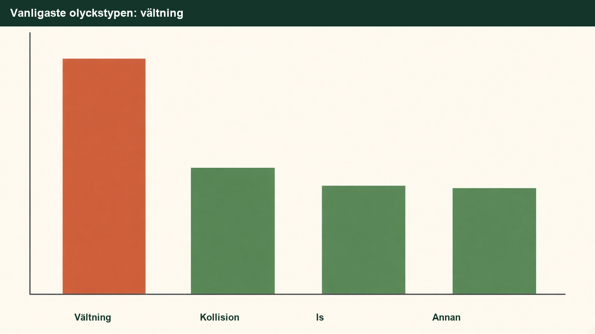
Skyldigheter vid trafikolycka
Om du har haft del i olyckan
Enligt 2 kap. 8 § trafikförordningen ska en trafikant som med eller utan egen skuld har haft del i en trafikolycka:
- stanna kvar på platsen
- hjälpa skadade efter förmåga
- medverka till de åtgärder som olyckan skäligen kräver, till exempel att minska risken för en följdolycka
- på begäran lämna namn, adress och upplysningar om händelsen till någon annan som haft del i olyckan eller vars egendom skadats
- snarast underrätta den skadelidande eller Polismyndigheten om egendom har skadats och ingen finns på plats som kan ta emot uppgifterna
- snarast underrätta Polismyndigheten om någon har skadats och skadan inte är obetydlig.
Fordon som innebär fara eller hinder ska flyttas till lämplig plats. Om någon har dött eller skadats svårt får fordon och andra betydelsefulla spår däremot bara flyttas eller ändras när det behövs för att undanröja fara för annan trafik.
Skyldigheterna gäller inom ramen för din förmåga och vad situationen skäligen kräver. Utsätt inte dig själv eller andra för allvarlig risk.
Om du är vittne
Skyldigheterna i trafikförordningen gäller den som haft del i olyckan. Den som bara ser en olycka har ingen sådan skyldighet enligt den bestämmelsen.
Gör ändå så här, när det kan ske säkert:
- stanna och skapa överblick
- varna andra trafikanter och förebygga följdolyckor
- ringa 112 vid personskada eller akut fara
- ge första hjälpen efter förmåga och följa larmoperatörens instruktioner
- lämna kontaktuppgifter och sakliga iakttagelser till polis eller räddningstjänst.
Första åtgärder på platsen
- Kontrollera säkerheten. Stäng av skotrar, säkra nyckel och nödstoppslina och bedöm trafik, brand, avgaser, brant terräng, vatten och is.
- Sök direkt efter livshotande yttre blödning. Tryck omedelbart med händerna mot såret. Lägg förband i eller på såret och fortsätt trycka; anlägg tryckförband när blödningen är under kontroll. Om en livshotande extremitetsblödning inte stoppas med direkt tryck används tourniquet 5–7 cm ovanför skadan, inte över en led. Följ 112-operatörens instruktioner.
- Kontrollera om personen reagerar. Tala högt och skaka försiktigt i axlarna.
- Ring 112 direkt om personen är medvetslös. Aktivera högtalarfunktionen och följ larmoperatörens instruktioner. Be någon annan hämta en hjärtstartare om en sådan finns tillgänglig.
- Öppna luftvägen och kontrollera andningen. Lägg en hand på pannan, böj huvudet bakåt och lyft hakan med den andra handen. Bedöm om andningen är normal.
- Starta HLR om personen inte andas eller andas onormalt. Långsam, gles, snarkande eller gäspande andning är onormal och kan vara tecken på hjärtstopp. Är du osäker, behandla andningen som onormal och följ 112-operatören.
Fördela uppgifterna om ni är flera.
Flytta inte en skadad i onödan vid misstänkt nack- eller ryggskada. Flytta bara när det behövs för livräddande åtgärder eller för att undkomma en omedelbar fara.
Vuxen-HLR
När en vuxen är medvetslös och inte andas normalt:
- Placera personen på rygg. Starta HLR där personen ligger om underlaget kan användas; på mjukt underlag behöver du trycka hårdare för att nå rätt kompressionsdjup.
- Placera handloven mitt på bröstkorgen och den andra handen ovanpå.
- Ge 30 bröstkompressioner med raka armar.
- Tryck 5–6 centimeter djupt i en takt av 100–120 kompressioner per minut. Släpp upp bröstkorgen helt mellan kompressionerna och minimera avbrotten.
- Öppna luftvägen med huvudbakåtböjning och haklyft och ge 2 inblåsningar, så att bröstkorgen höjer sig.
- Fortsätt 30 kompressioner och 2 inblåsningar, 30:2.
Om du inte kan eller vill ge inblåsningar ska du ge kontinuerliga bröstkompressioner. Anslut en hjärtstartare så snart som möjligt, följ dess talade instruktioner och fortsätt HLR enligt anvisningarna. Fortsätt tills personen visar tydliga livstecken eller professionell hjälp tar över.
Vid drunkning
När en person har tagits upp ur vattnet är syrebrist en särskilt viktig orsak till hjärtstopp. Larma 112 tidigt. Om personen är medvetslös och inte andas normalt ska du enligt Svenska HLR-rådets riktlinjer ge 5 inledande inblåsningar och därefter fortsätta med vuxen-HLR 30:2. Följ larmoperatörens instruktioner. För barn fortsätter den som är utbildad i barn-HLR med 15:2; den som inte är utbildad följer 112-operatörens instruktioner och kan använda 30:2.
Använd hjärtstartare så snart den finns. Torka bröstkorgen så att elektroderna fäster och se till att ingen rör personen eller befinner sig i samma vattenpöl under analys eller stöt.
Gå inte ut i osäkert vatten eller på osäker is så att även du blir nödställd. Använd i första hand räddningslina, livboj eller annat förlängande hjälpmedel från säker plats.
Medvetslös person som andas normalt
En medvetslös person som andas normalt ska placeras i stabilt sidoläge, om skadeläget medger det. Ring 112, skydda personen mot kyla och kontrollera fortlöpande att andningen förblir normal. Om andningen blir onormal eller upphör ska personen läggas på rygg och HLR startas.
Stabilt sidoläge ska inte användas vid misstänkt hjärtstopp.
Misstänkt cirkulationssvikt
Blekhet, kallsvettning, oro, förvirring, snabb ytlig andning eller tilltagande slöhet efter en olycka kan vara tecken på ett allvarligt tillstånd, bland annat cirkulationssvikt.
- Ring 112 och följ instruktionerna.
- Låt personen vila i en ställning som är säker och tolereras väl.
- Stoppa synlig kraftig blödning med direkt tryck.
- Isolera mot marken och håll personen varm med torra kläder, filtar eller räddningsfolie, utan att överhetta.
- Prata lugnt och övervaka medvetande och andning.
- Ge inte mat eller dryck.
Kylskada och nedkylning
Skydda personen från fortsatt kyla, vind, fukt och markkyla. Ta varsamt av våta kläder och isolera med torra kläder, filtar eller sovsäck. En kraftigt nedkyld person ska hanteras varsamt och ligga stilla på rygg. Ring 112 vid slöhet, förvirring, avtagande huttring, medvetslöshet eller onormal andning.
Vid lokal kylskada:
- börja varsam uppvärmning omedelbart, helst hud mot hud, till exempel en varm hand mot en kind eller fingrar i en armhåla
- gnugga eller massera inte området
- använd inte hett vatten, öppen låga eller upphettade föremål
- tina inte en djup kylskada om kroppsdelen riskerar att frysa igen innan vård kan nås
- skydda området och sök omedelbar vård vid djup skada eller blåsor; kontakta vården vid kvarstående känselbortfall.
Brännskada
Avlägsna först värmekällan utan att utsätta dig för risk. Kyl brännskadan så snart som möjligt med svalt rinnande vatten i minst 20 minuter. Använd inte is, snö eller mycket kallt vatten.
Kyl själva skadan men håll resten av personen varm. I vintermiljö måste kylningen anpassas eller avbrytas om personen riskerar att bli nedkyld. Täck därefter skadan löst med ett rent, torrt förband.
Kontakta 1177 eller vården vid brännskada större än den skadades hand, djup skada, blåsor eller sönderbränd hud, skada i ansikte, på händer, fötter, underliv eller över större leder samt vid el- eller frätskada. Ring 112 vid inandning av brandrök, påverkat allmäntillstånd, akut fara eller enligt larmoperatörens bedömning.
Larma
Ring 112 vid medvetslöshet, onormal andning, allvarlig skada eller akut fara. I fjällterräng ansvarar Polismyndigheten för den statliga fjällräddningen och 112 förmedlar larmet rätt.
Berätta:
- var ni är — GPS-position, lednamn, närmaste stuga, väg eller annat landmärke
- vad som har hänt
- hur många som är skadade
- om de skadade är vakna och om de andas normalt
- vilka omedelbara risker som finns på platsen
- ditt namn och telefonnummer.
Följ larmoperatörens instruktioner, avsluta inte samtalet förrän du får besked och håll telefonen tillgänglig. Organisera mottagandet av räddningsresurser enligt instruktion från 112 eller räddningspersonalen. Använd inte fordonsljus eller andra signaler på ett sätt som skapar bländning, brandrisk, avgaser eller annan fara.
Källor till kapitlet finns i källförteckningen längst bak i boken. Kontrollerade 18 september 2026.
Praktisk körning
Den praktiska utbildningen ska ge dig förmåga att hantera snöskotern säkert och självständigt. Utbildaren planerar övningarna utifrån kursplanen, övningsplatsens riskbedömning, aktuellt underlag, väder, fordon och elevens färdighetsnivå.
Efter kapitlet ska du kunna:
- genomföra en säkerhetskontroll
- välja och anpassa körställning, även vid backning
- accelerera, bromsa, svänga och väja med kontroll
- anpassa hastighet och vägval till sikt, underlag och terräng
- köra i lutning och passera hinder på ett säkert sätt
- ta loss eller bärga en fastkörd snöskoter med säkra arbetsmetoder.
Utbildningens ramar
Vid övningskörning som inte sker i gatutrafik eller på landsväg får en lärare undervisa högst fyra elever åt gången.
Övningsplatsen ska vara lämplig med hänsyn till säkerheten och den föreskrivna utbildningen. De praktiska övningarna ska genomföras i en hastighet som gör det möjligt att uppnå respektive utbildningsmål.
Hastigheten för varje moment bestäms av instruktören utifrån undervisningsplanen och platsens riskbedömning. Du ska alltid anpassa hastigheten till sikt, underlag, avstånd och egen förmåga.
Använd föreskriven personlig skyddsutrustning. Hjälmen ska vara korrekt fastspänd under körning och nödstoppslinan ska vara ansluten enligt tillverkarens anvisningar.
Säkerhetskontroll
Varje körpass inleds med kontroll av bland annat:
- gasreglage — löper lätt och återgår till tomgångsläge
- broms — fungerar och ger normalt motstånd
- styrning, skidor och drivmatta — fria från synliga skador och hinder
- belysning
- nödstopp och nödstoppslina
- bränsle, olja och andra nivåer enligt fordonets instruktionsbok
- last och eventuella redskap — säkrade
- prov av broms och styrning i låg hastighet efter start.
Kör inte ett fordon med säkerhetskritiska fel. Rapportera felet till instruktören.
Körställningar
Körställningen anpassas till fordon, terräng, hastighet och det moment som ska utföras.
Sittande ger en låg tyngdpunkt och passar ofta vid lugn körning på jämnt underlag.
Knästående ger bättre möjlighet att se, vrida överkroppen och förflytta kroppsvikten.
Stående kan ge bättre överblick och möjlighet att använda ben och armar för att ta upp rörelser på ojämnt underlag. Håll knäna lätt böjda och ett stabilt grepp om fordonet.
Backning
Vid backning står du på knä på sätet. Då kan du vrida dig och se bakåt och samtidigt nå styre och reglage. Backa långsamt, kontrollera området bakom dig och avbryt om du tappar sikten eller balansen. Anpassa ställningen efter skoterns konstruktion och instruktörens anvisningar.
Uppför, nedför och i skrå
- Uppför: flytta kroppsvikten framåt i den omfattning som behövs för styrförmåga och drivgrepp. Välj linje innan stigningen och undvik abrupt gaspådrag.
- Nedför: håll låg, jämn och kontrollerad hastighet. Anpassa kroppsvikten och använd broms och gas enligt fordonets instruktionsbok, underlaget och instruktörens anvisningar. Undvik att låsa drivbandet.
- Skrå: förflytta kroppsvikten mot sluttningens högre sida i den omfattning som behövs. Välj en säker linje och planera en väg ut ur situationen.
Fordonstyper reagerar olika. Instruktörens demonstration och tillverkarens anvisningar gäller för den snöskoter som används.
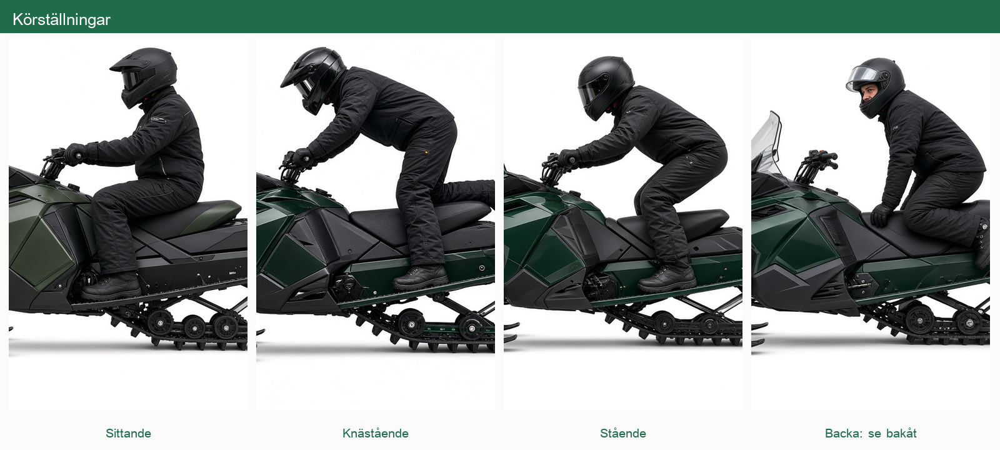
Grundläggande manövrering
Grundläggande manöverträning ska genomföras innan övningskörning i trafik.
Acceleration. Öka gaspådraget jämnt och behåll balans och riktning.
Mjuk inbromsning. Planera stoppet, rikta blicken dit du ska och bromsa progressivt.
Kraftig inbromsning. Bromsa bestämt men med bibehållen kontroll. Om drivbandet låser och styrförmågan minskar, anpassa bromskraften enligt instruktörens anvisningar.
Serpentinkörning. Rikta blicken genom svängen, håll fötterna på avsedda fotstöd och förflytta kroppsvikten kontrollerat.
Undanmanöver. Titta mot den fria vägen, styr kontrollerat och undvik reglageåtgärder som förbrukar tillgängligt grepp.
Kurvtagning. Anpassa hastigheten före kurvan och använd lämplig körställning och viktförflyttning för att minska vältrisken.
Instruktören bestämmer start, stopp, ordningsföljd och högsta tillåtna hastighet för varje övning.
Passager och vägval
Praktiska moment kan omfatta:
- vägövergång: stanna före vägen, låt passagerare stiga av och korsa endast när det kan ske säkert och enligt gällande regler
- simulerad järnvägspassage: öva stopp, observation och säker passage under instruktörens ledning
- plogvall, bro och andra hinder: välj hastighet och körställning så att passagen kan genomföras med kontroll
- vägval i lutning: välj en linje som minskar vält-, kollisions- och fastkörningsrisk.
Bedöm alltid om ett moment ska genomföras. Instruktören ska ändra eller avbryta övningen om plats, väder eller underlag inte ger tillräcklig säkerhet.
Fastkörd snöskoter och bärgning
Planera arbetet innan någon gräver, lyfter eller drar:
- Stäng av motorn. Säkra nyckel och nödstoppslina så att motorn inte kan starta oavsiktligt.
- Stabilisera snöskotern. Kontrollera att den inte kan glida, välta eller klämma någon. Arbeta inte under en instabil maskin.
- Hjälmen får tas av vid grävning om platsen är säker och ingen risk för fall eller slag finns. Den ska på igen innan någon startar motorn.
- Skapa utrymme. Gräv eller trampa bort snö framför, bakom och vid sidorna samt under de delar som hindrar rörelsen.
- Arbeta ergonomiskt. Stå stabilt, håll ryggen så neutral som möjligt, böj knäna, arbeta nära kroppen och samordna lyft. Avbryt om belastningen blir för stor.
- Undvik personer nära drivband och rörliga delar. Starta inte motorn förrän alla står på säkert avstånd och instruktören har gett klartecken.
- Använd dragutrustning rätt. Använd endast oskadad, rätt dimensionerad dragutrustning och avsedda fästpunkter. Dra jämnt; ryck eller chockbelasta aldrig lina, stropp eller vinsch. Ingen får stå mellan fordonen eller i linans möjliga rekyl- eller piskzon. Följ utrustningens anvisningar och använd lindämpare när sådan föreskrivs.
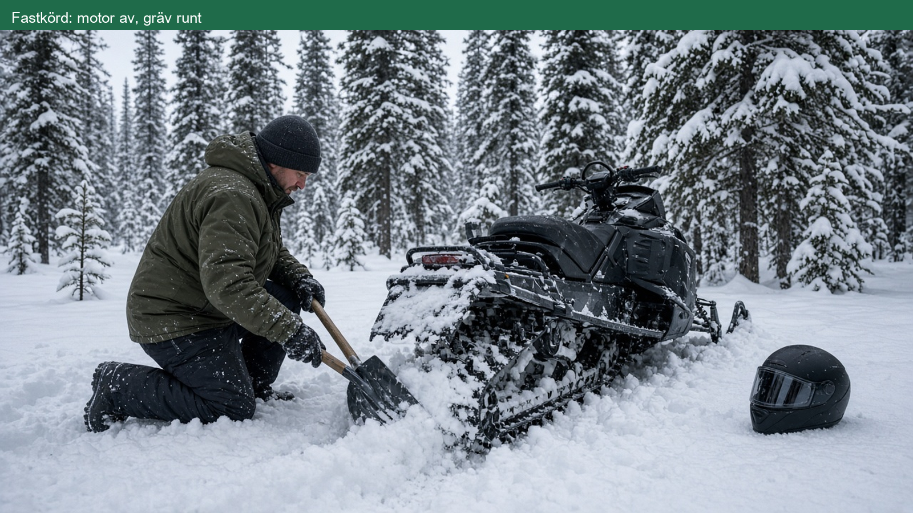
Vad instruktören bedömer
Bedömningen omfattar bland annat:
- säkerhetskontroll och användning av skyddsutrustning
- bromsning, styrning och manövrering med bibehållen kontroll
- hastighetsanpassning efter sikt, underlag, terräng och andra deltagare
- körställning, balans och viktförflyttning
- vägval, riskmedvetenhet och förmåga att följa instruktioner
- säker hantering vid fastkörning eller bärgning.
Ytterligare praktiska moment får ingå när utbildaren kan genomföra dem säkert och de finns beskrivna i undervisningsplanen.
Källor till kapitlet finns i källförteckningen längst bak i boken. Kontrollerade 18 september 2026.
Inför kunskapsprovet
När den teoretiska och praktiska utbildningen är genomförd får du göra kunskapsprovet inför en behörig provförrättare.
Förutsättningar
- Du ska ha fyllt 16 år.
- Du ska ha genomfört utbildningen hos en godkänd utbildare.
- Ta med den identitetshandling som provanordnaren kräver.
- Följ provanordnarens instruktioner om tillåtna hjälpmedel, placering och genomförande.
Så är provet reglerat
Kunskapsprovet:
- ska bestå av lägst 25 och högst 35 frågor
- kräver minst 80 procent rätt för godkänt resultat
- ska normalt vara skriftligt
- får genomföras muntligt om eleven har påtagliga läs- eller skrivsvårigheter
- prövar fordonskännedom, trafikregler, trafiksäkerhet och personliga förutsättningar.
För snöskoter utformas frågorna med ett rätt svarsalternativ.
Frågor om genomförande och behov av anpassning
Kontakta provanordnaren i god tid före provet om du har frågor om förfarandet eller behöver ett muntligt eller på annat sätt anpassat genomförande. Fråga vilka regler, underlag och tidsfrister som gäller i just din situation.
Under provet får provförrättaren inte förklara en fråga så att svaret avslöjas. Läs därför varje fråga noga och fråga hellre före provet om du är osäker på hur det går till. Om ett tekniskt eller praktiskt problem uppstår följer du provförrättarens instruktioner.
Efter provet
Om du inte blir godkänd får du göra om provet vid ett senare tillfälle enligt provanordnarens rutiner.
Efter ett godkänt prov:
- rapporterar provanordnaren resultatet till Transportstyrelsen
- får du köra när resultatet har registrerats, om du har giltig legitimation med dig
- måste du efter två månader ha med dig själva förarbeviset när du kör
- skickar Transportstyrelsen en grundhandling och betalningsavi
- ska du skicka in grundhandlingen med fotografi och namnteckning samt betala tillverkningsavgiften
- förlorar du behörigheten om ansökan och betalningen inte har kommit in inom ett år från dagen för det godkända provet.
Kontrollera alltid aktuella avgifter och administrativa rutiner hos Transportstyrelsen.
Källor till kapitlet finns i källförteckningen längst bak i boken. Kontrollerade 18 september 2026.
Källförteckning
Lagtext, myndighetsinformation och riktlinjer som kapitlen bygger på. Regler kan ändras; kontrollera alltid aktuell källa.
Kapitel 1 — Förare och fordon Kontrollerade 18 september 2026
- Bilden *Fem skotertyper*: touringfoto Instruktörsverket AB; övriga Wikimedia Commons — Ski-Doo MXZ 800 (public domain, Dirk Unger); Ski-Doo Summit 600 och Expedition SE (CC BY-SA 4.0, GT1976 respektive Asurnipal); Lynx Enduro 400 (public domain, Dirk Unger).
- Transportstyrelsen, Terrängmotorfordon: https://www.transportstyrelsen.se/sv/vagtrafik/fordon/fordonsregler/regler-for-olika-fordonsslag/terrangmotorfordon/
- Trafikförordningen (1998:1276), bland annat 4 kap. 9 § om skyddshjälm: https://www.riksdagen.se/sv/dokument-och-lagar/dokument/svensk-forfattningssamling/trafikforordning-19981276_sfs-1998-1276/
- MSB, Transportera farligt gods som privatperson: https://www.msb.se/sv/amnesomraden/skydd-mot-olyckor-och-farliga-amnen/farligt-gods/undantag-och-lattnader/transportera-farligt-gods-som-privatperson/
- MSB, Hantering av brandfarliga vätskor (vägledning om lämpliga och typgodkända behållare): https://rib.msb.se/filer/pdf/30551.pdf
- Camso Powersports, How to choose the right snowmobile track for your riding style (kamhöjd per körstil): https://powersports.camso.co/en-ca/snowmobile/news/how-to-choose-the-right-snowmobile-track-for-your-riding-style
- Rinab, köpguide drivmattor (svensk indelning i led 25–38 mm, on/off 38–50 mm, lössnö 50 mm+): https://www.rinab.nu/
- För kylning, drivmatta, slirskydd och isrivare gäller i första hand instruktionsboken och tillverkarens anvisningar för den aktuella modellen.
Kapitel 2 — Miljö, natur och hänsyn Kontrollerade 18 september 2026
- Naturvårdsverket, Snöskoter: https://www.naturvardsverket.se/amnesomraden/friluftsliv/motortrafik-i-naturen/snoskoter/
- Terrängkörningslagen (1975:1313): https://www.riksdagen.se/sv/dokument-och-lagar/dokument/svensk-forfattningssamling/terrangkorningslag-19751313_sfs-1975-1313/
- Terrängkörningsförordningen (1978:594), bland annat 4 § om plant- och ungskog: https://www.riksdagen.se/sv/dokument-och-lagar/dokument/svensk-forfattningssamling/terrangkorningsforordning-1978594_sfs-1978-594/
- Trafikförordningen (1998:1276), 2 kap. 1 § om hänsyn i terräng: https://www.riksdagen.se/sv/dokument-och-lagar/dokument/svensk-forfattningssamling/trafikforordning-19981276_sfs-1998-1276/
- Funäsfjällen, Skoterregler i Funäsfjällen: https://funasfjallen.se/kunskapsbank/skoterregler-i-funasfjallen/
- Funäsfjällens Ledbolag, Skoter och aktuell ledstatus: https://funasfjallensledbolag.se/skoter/
Kapitel 3 — Trafikregler Kontrollerade 18 september 2026
- Förordningen (2001:651) om vägtrafikdefinitioner, definitionerna av terräng och väg: https://www.riksdagen.se/sv/dokument-och-lagar/dokument/svensk-forfattningssamling/forordning-2001651-om-vagtrafikdefinitioner_sfs-2001-651/
- Trafikförordningen (1998:1276), bland annat 1 kap. 4 §, 2 kap. 1 och 7 §§, 3 kap. 18, 30 och 58 §§ samt 5 kap. 1–5 §§: https://www.riksdagen.se/sv/dokument-och-lagar/dokument/svensk-forfattningssamling/trafikforordning-19981276_sfs-1998-1276/
- Transportstyrelsen, Terrängmotorfordon: https://www.transportstyrelsen.se/sv/vagtrafik/fordon/fordonsregler/regler-for-olika-fordonsslag/terrangmotorfordon/
- Transportstyrelsen, Högerregeln: https://www.transportstyrelsen.se/sv/vagtrafik/trafikregler-och-vagmarken/trafikregler/generella-trafikregler/hogerregeln/
- Vägmärkesförordningen (2007:90), bland annat C13 och D9: https://www.riksdagen.se/sv/dokument-och-lagar/dokument/svensk-forfattningssamling/vagmarkesforordning-200790_sfs-2007-90/
- Transportstyrelsen, F31 Lämplig väg eller förbifart för visst fordonsslag eller trafikantgrupp: https://www.transportstyrelsen.se/sv/vagtrafik/trafikregler-och-vagmarken/vagmarken/lokaliseringsmarken-for-vagvisning/lamplig-vag-eller-forbifart-for-visst-fordonsslag-eller-trafikantgrupp/
- Jaktförordningen (1987:905), 22 §: https://www.riksdagen.se/sv/dokument-och-lagar/dokument/svensk-forfattningssamling/jaktforordning-1987905_sfs-1987-905/
Kapitel 4 — Straff, behörighet och försäkring Kontrollerade 18 september 2026
- Transportstyrelsen, Förarbevis för snöskoter
- Transportstyrelsen, Övergångsregler och hävdvunna rättigheter
- Trafikförsäkringsföreningen, Om trafikförsäkring och Vad gäller kravet?
- Sveriges riksdag, trafikskadelag (1975:1410), särskilt 2 och 34 §§
- Polismyndigheten, Rattfylleri och sjöfylleri
- Transportstyrelsen, Trafikfarliga läkemedel
Kapitel 5 — Trafiksäkerhet Kontrollerade 18 september 2026
- Transportstyrelsen, Kunskapsprov för moped klass II, snöskoter och terränghjuling
- Transportstyrelsen, *TSFS 2009:14 om förarbevis för moped klass II, snöskoter och terränghjuling*
- Nationella Snöskoterrådet, *Snöskoterhandboken*
- Reaktions- och bromssträcka: standardformlerna i svensk körkortsutbildning (reaktionssträcka = hastighet/3,6 × reaktionstid; bromssträcka = hastighet² / (250 × friktionstal), där friktionstalet brukar sättas till 0,8 på torr asfalt, 0,3 på snö och 0,1 på is)
- Myndigheten för samhällsskydd och beredskap, RIB, *Utvärdering av insats vid drunkningsolycka, Upplands-Bro 2014* och *Utvärdering av insats vid skoterolycka, Krokoms kommun 2012*
- Naturvårdsverket, Lavinprognoser.se — aktuella prognoser, lutningsverktyg och allmänna råd
- Fjällsäkerhetsrådet, information om lavinsäkerhet och fjällsäkerhet
Kapitel 6 — Människan som förare Kontrollerade 18 september 2026
- Transportstyrelsen, Kunskapsprov för moped klass II, snöskoter och terränghjuling
- Transportstyrelsen, *TSFS 2009:14 om förarbevis för moped klass II, snöskoter och terränghjuling*
- Transportstyrelsen, Trafikfarliga läkemedel
- Polismyndigheten, Rattfylleri och sjöfylleri
- Öström, Eriksson m.fl., Umeå universitet, studier av dödsolyckor med snöskoter 1999–2006 och 2006–2012 (andel alkoholpåverkade, promillehalter, helg och mörker)
- Nationella Snöskoterrådet, attitydundersökning om alkohol och skoterkörning (refererad av SVT Nyheter Jämtland)
- SNOFED, *Snöskoterboken*, kapitel 10 "Personliga förutsättningar"
- 1177 Vårdguiden, information om akut förgiftning och när 112 ska kontaktas
- Giftinformationscentralen, information om kolmonoxid
Kapitel 7 — Olyckor och första hjälpen Kontrollerade 18 september 2026
- Trafikförordning (1998:1276), 2 kap. 8 § — Sveriges riksdag
- Sammanfattning av HLR-rådets riktlinjer för hjärt-lungräddning och första hjälpen 2026 — Svenska HLR-rådet
- Så här gör du Vuxen-HLR — Svenska HLR-rådet
- Köldskador — 1177
- Brännskador — Svenska Röda Korset
Kapitel 8 — Praktisk körning Kontrollerade 18 september 2026
- Transportstyrelsens föreskrifter (TSFS 2009:14) om förarbevis för moped klass II, snöskoter och terränghjuling, konsoliderad version
- Förarbevis för snöskoter — Transportstyrelsen
- Utbildning för moped klass II, snöskoter och terränghjuling — Transportstyrelsen
- SNOFED, *Snöskoterboken*, kapitel 11 "Manövrering och praktisk träning" (körställningar, underlag)